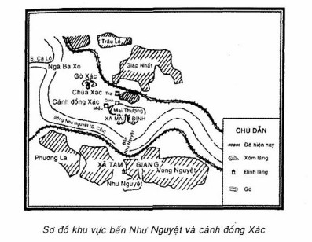
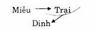
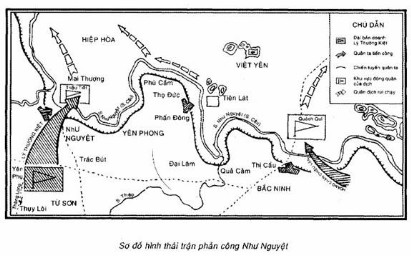

MÙA XUÂN NĂM 1077
Nam quốc sơn hà Nam đế cư
Tiệt nhiên định phận tại thiên thư
Như hà nghịch lỗ lai xâm phạm
Nhữ đẳng hành khang thủ bại hư
LÝ THƯỜNG KIỆT
Ai đi qua Hà Bắc cũng phải nhận rằng sông Như Nguyệt hiền lành, êm đẹp, rất hợp với tên. Vào đời Lý, Như Nguyệt là tên sông Cầu, đoạn chảy từ ngã ba sông Cà Lồ và sông Cầu (ngã ba Xà ở thôn Như Nguyệt, Phương La Đông, xã Tam Giang, huyện Yên Phong, Hà Bắc) đến Phả Lại (Chí Linh, Hải Hưng)(1). Nhưng giống như nhiều tên núi, tên sông khác của Việt Nam, Như Nguyệt cũng là tên một chiến công oanh liệt. Gần 900 năm trước, bên dòng Như Nguyệt, quân dân ta đã chặn đứng cuộc tiến công của hàng chục vạn quân Tống xâm lược, giải phóng phần đất phía Bắc của Tổ quốc vừa bị chiếm đóng, đập tan âm mưu xâm lược của triều Tống.
==***==
Chiến thắng Bạch Đằng vĩ đại cuối năm 938 do Ngô Quyền lãnh đạo đã chấm dứt hẳn thời kỳ đô hộ kéo dài trên 10 thế kỷ của phong kiến phương Bắc, mở ra một thời kỳ độc lập lâu dài của đất nước.
Nhưng nền độc lập dân tộc vừa giành được vẫn luôn bị ngoại ban đe dọa và công cuộc dựng nước phải gắn liền với những cuộc kháng chiến bảo vệ và củng cố nền độc lập dân tộc. Vào thế kỷ X, XI nhà Tống đã hai lần tiến hành xâm lược nước ta. Vua Tống nuôi hy vọng “Lấy lại Giao Châu bị mất " vì cuối đời Đường "nhiều khó khăn chưa kịp khu xử” (2).
Mùa xuân năm 981, mấy vạn quân xâm lược Tống đã bị quân dân ta do Lê Hoàn lãnh đạo đánh tan. Cuộc kháng chiến chống Tống lần thứ nhất đã giành được thắng lợi vẻ vang, đẩy lùi âm mưu xâm lược của nhà Tống trong một thời gian.
Sang giữa thế kỷ XI nhà Tống lại lăm le xâm lược nước ta lần nữa với mục đích vừa để chiếm đất đai, mở rộng phạm vi bóc lột, vừa để trả thù lần thất bại trước, vừa để giải quyết một số mâu thuẫn về mặt đối nội, đối ngoại. Lúc bấy giờ, nhà Tống đang phải đối phó vất vả với hai nước Liêu, Hạ ở phía bắc và tây bắc. Nhiều cuộc xung đột lớn đã xảy ra, quân Tống bị chết hàng vạn người và nhà Tống có lúc phải nhượng bộ, "ban" cho hai nước nhiều của cải, đất đai mà vẫn không trừ bỏ được mối đe dọa đó. Trong nước, mâu thuẫn giai cấp ngày một tăng lên và nhiều cuộc khởi nghĩa nông dân đã bùng nổ. Năm 1068, Tống Thần Tông lên nối ngôi, cùng với tể tướng Vương An Thạch thi hành một số cải cách nhưng cũng không giải quyết được những khó khăn về mặt đối nội. Trước các nguy cơ đó, vua tôi nhà Tống chủ trương xâm lược nước ta để đánh lạc hướng đấu tranh của quần chúng, củng cố uy thế trong nước và uy hiếp các nước Liêu, Hạ. Theo sự tính toán của nhà Tống, đánh nước ta để "Nếu thắng, thế Tống sẽ tăng, các nước Liêu, Hạ sẽ phải kiêng nể” (3).
Nhà Tống chuẩn bị rất chu đáo cho cuộc chiến tranh xâm lược lần thứ hai. Tống Thần Tông và Vương An Thạch thường bàn bạc với nhau kế hoạch đánh chiếm nước ta (4). Nhà Tống ráo riết xây dựng nhiều căn cứ quân sự và hậu cần giáp vùng biên thùy đông bắc nước ta (từ Cao Bằng ra đến biển) làm nơi xuất phát trực tiếp cho các đạo quân xâm lược. Đây là vùng biên giới nhà Tống kiểm soát chặt chẽ và là đầu mối nhiều đường giao thông thủy bộ tiến xuống Đại Việt. Trong vùng này, thành Ung Châu (Nam Ninh, Quảng Tây) giữ vị trí quan trọng và là nơi tập kết quân rất tiện lợi. Từ đó đến các châu biên giới của ta là Quảng Nguyên (Quảng Uyên, Cao Bằng), Quang Lang (Ôn Châu, Lạng Sơn), Tô Mậu (Na Dương, Đình Lập, An Châu, Hà Bắc) đều có đường đi, dài chừng 150 ki-lô-mét. Từ đó đến hai cửa biển Khâm Châu và Liêm Châu (Quảng Đông) cũng có đường đi thuận lợi, dài khoảng 120 ki-lô-mét. Nhà Tống biến Ung Châu thành một căn cứ xâm lược trọng yếu. Ở đó những viên tưóng Tống được lệnh tăng cường bắt lính, tổ chức tập trận và tích trữ quân lương. Mặt nam Ung Châu sát biên giới nước ta, nhà Tống đặt 5 trại quân: Hoành An, Thái Bình, Vĩnh Bình, Cổ Vạn, Thiên Long. Nhà Tống còn xảo quyệt tìm cách lôi kéo, mua chuộc một số tù trưởng dân tộc thiểu số vùng biên giới làm nội gián đế chia rẽ, phá hoại khối đoàn kết dân tộc của ta.
Nhà Tống chuẩn bị xâm lược nước ta một cách thận trọng, chu đáo và thâm độc. Song đến năm 1075, mọi việc chuẩn bị vẫn lộ liễu đến mức độ viên quan coi Ung Châu là Tô Giám cũng nói: “Phải bỏ ngay ba việc đang làm: tập lính, đóng tàu, cấm chợ, để người Giao Chỉ không có danh nghĩa cất quân”(5). Ung Châu cùng với các trại quân biên giới và cửa biển Khâm, Liêm đã trở thành những mũi dao nhọn đe dọa sự sống còn của đất nước ta, uy hiếp nền độc lập dân tộc của ta.
Sau hơn một thế kỷ giành được độc lập kể từ chiến thắng Bạch Đằng (năm 938), dân tộc ta đã lớn lên nhanh chóng về mọi mặt. Trải qua các triều Ngô, Đinh, Tiền Lê, đặc biệt là từ đời Lý, công cuộc xây dựng đất nước được đẩy mạnh trên quy mô lớn. Kinh tế phát triển mạnh mẽ, quốc gia thống nhất được củng cố, văn hóa dân tộc bước vào một giai đoạn rực rỡ - giai đoạn văn hóa Lý, Trần hay văn hóa Thăng Long. Trên cơ sở kinh tế, chính trị đó, lực lượng quốc phòng cũng được tăng cường. Quân đội chủ lực của nhà Lý gồm cấm quân (hay thân quân, thắng binh) bảo vệ hoàng thành và theo vua đi chiến trận, quân các lộ đóng giữ các địa phương. Tất cả dân đinh từ 18 đến 20 tuổi gọi là hoàng nam đều phải vào lính trong 2 năm. Dân đinh 20 tuổi trở lên gọi là đại hoàng nam ở nhà làm ruộng nhưng phải ghi tên vào sổ quân và khi cần thiết, nhà nước gọi nhập ngũ. Đó là chính sách "ngụ binh ư nông" (gửi binh ở nhà nông) nhằm tăng cường lực lượng quân đội nhưng vẫn bảo đảm sản xuất và tiết kiệm chi phí cho nhà nước. Ngoài ra, vương hầu quý tộc và một số tù trưởng miền núi còn có quân đội riêng nhưng phải đặt dưới sự điều động của triều đình. Vào đầu đời Lý, quân đội ngoài bộ binh, có kỵ binh, tượng binh, thủy binh. Thủy binh nước ta mạnh và có truyền thống lâu đời. Trang bị quân đội, ngoài giáo, mác, kiếm, thương, mộc, cung nỏ... còn có máy bắn đá là loại vũ khí lợi hại trước khi hỏa pháo ra đời. Quân sĩ được huấn luyện theo một số nguyên tắc, chế độ chặt chẽ lúc đó đã được biên soạn thành sách mà Tống sử gọi là An Nam hành quân pháp(6).
Sự lớn mạnh về mọi mặt của đất nước cho phép nhà Lý đối phó với âm mưu xâm lược của nhà Tống một cách kiên quyết chủ động, thể hiện quyết tâm bảo vệ độc lập dân tộc và ý chí tự lập tự cường mạnh mẽ của cả dân tộc. Bằng cách tranh thủ các tù trưởng thiểu số, nhà Lý thắt chặt hơn nữa quan hệ giữa triều đình trung ương và các dân tộc miền núi, củng cố khối đoàn kết dân tộc, làm thất bại thủ đoạn mua chuộc, chia rẽ của nhà Tống.
Năm 1072, vua Lý Thánh Tông mất, con lên nối ngôi là Lý Nhân Tông mới 7 tuổi. Công việc triều chính lúc bấy giờ ở trong tay thái úy Lý Thường Kiệt(7), cương vị như tể tướng. Ông là một người yêu nước tha thiết, có ý thức độc lập tự chủ mãnh liệt, là một nhà chính trị lỗi lạc và một nhà quân sự tài ba. Theo dõi chặt chẽ âm mưu và hành động của nhà Tống, ông chủ trương: "Ngồi đợi giặc không bằng đem quân ra trước để chặn mũi nhọn của giặc"(8). Chủ trương "tiên phát chế nhân" đó là một sáng tạo độc đáo của Lý Thường Kiệt, xuất phát từ sự nhận thức vững vàng về sức mạnh vật chất và tinh thần của dân tộc, sự phân tích đánh giá đúng những chỗ mạnh, chỗ yếu của địch. Nhà Tống tuy là một nước lớn, có quyết tâm xâm lược nhưng đang đứng trớc một số khó khăn về đối nội đối ngoại, không thể hành động một cách kiên quyết, đối phó một cách kịp thời. Chủ trương đó biểu thị một tư tưởng chiến lược tích cực, lấy tiến công để tự vệ một cách chủ động.
Cuối năm 1075, 10 vạn quân thủy bộ của ta do Lý Thường Kiệt trực tiếp chỉ huy, bất ngờ tập kích vào các căn cứ xâm lược của quân Tống mà trung tâm là thành Ung Châu. Ngày 18 tháng 01 năm 1076, quân ta bao vây thành Ung Châu và sau 42 ngày công phá dữ dội, ngày 01 tháng 3 năm 1076, quân ta hạ thành. Lý Thường Kiệt ra lệnh hủy thành luỹ, phá kho tàng trong cả vùng Tả Giang và lấy đá lấp sông để ngăn chặn đường cứu viện của quân Tống. Mục đích của cuộc tiến công đã đạt được, Lý Thường Kiệt lập tức rút quân về nước trong lúc vua tôi nhà Tống đang bị động bàn bạc cách đối phó.
Bằng cuộc tập kích táo bạo, tiến công vào kẻ dịch đang chuẩn bị xâm lược, Lý Thường Kiệt đã “chặn mũi nhọn của giặc” đẩy kẻ thù vào thế bị động ngay từ đầu và tạo ra nhiều điều kiện có lợi cho cuộc kháng chiến chống xâm lược của dân tộc ta. Bao nhiêu căn cứ quân sự và hậu cần nhà Tống chuẩn bị bấy lâu nay, trong chốc lát bị phá hủy tan tành. Những khó khăn của nhà Tống bị khoét sâu thêm. Các nước Liêu, Hạ được dịp coi thường "thiên tử". Nhân dân Trung Quốc càng thêm oán ghét triều đình Tống. Mâu thuẫn trong nội bộ triều Tống lại sâu sắc thêm. Phái chủ chiến bị đã kích mạnh và tháng 10 năm 1076, tể tướng Vương An Thạch phải từ chức trong một thời gian.
Cuộc tiến công thành Ung Châu là một bộ phận và là giai đoạn đầu của cuộc kháng chiến chống quân Tống xâm lược. Thắng lợi của cuộc tiến công để tự vệ đó đã dập tắt được ý đồ xâm lược của nhà Tống, nhng đã cổ vũ quân dân ta thừa thắng đập tan những đạo quân xâm lược Tống trong một thế chiến lược có lợi cho ta.
*
**
Đầu tháng 3 năm 1076 (9), quân ta rút hết về nước. Biết thế nào quân Tống cũng sẽ kéo sang xâm lược, Lý Thường Kiệt cùng với triều đình nhà Lý lo xúc tiến ngay công việc chuẩn bị chống giặc. Bằng một mạng lưới thám tử tung sang hoạt động trên đất Tống dưới nhiều hình thức như nhà sư, lái buôn, dân chài..., Lý Thường Kiệt nắm chắc tình hình địch và theo dõi từng bước hành động của quân Tống.
Nhà Tống rất bất ngờ trước cuộc tập kích của quân đội nhà Lý. Lúc đầu họ hoang mang, lúng túng rồi sau mới đề ra được chủ trương: lợi dụng khi quân Lý Thường Kiệt đang bị giam chân Ở Ung Châu, điều đại quân đánh thẳng sang chiếm lấy nước ta. Nhưng chủ trương đó chưa kịp thực hiện thì quân ta đã hạ xong thành Ung Châu và ung dung rút về nước. Nhà Tống lại một lần nữa phải bị động thay đổi kế hoạch xâm lược và lo chuẩn bị kỹ hơn cho cuộc viễn chinh.
Vua Tống cử Quách Quỳ là một võ tướng cao cấp đã từng giúp Phạm Trọng Yêm giữ biên thùy phía bắc chống lại nước Hạ, làm chánh tướng. Triệu Tiết giữ chức viên ngoại lang bộ lại đang coi Diên Châu (Thiểm Tây) được điều về làm phó tướng. Dưới trướng Quách Quỳ và Triệu Tiết, có nhiều tướng đã quen chiến trận ở miền bắc. Về quân số, Quách Quỳ muốn huy động một lực lượng thật lớn, càng nhiều càng tốt. Trả lời câu hỏi cần bao nhiêu quân, Quách Quỳ nói: "Cần nhiều, miễn sao cho đủ dùng, chứ nói ra không hết” (10). Cuối cùng, nhà Tống quyết định điều 10 vạn quân chiến đấu gồm bộ binh và kỵ binh, 1 vạn ngựa và 20 vạn phu vận chuyển lương thực. Ngoài ra, nhà Tống còn tổ chức một đội thuỷ binh tiến sang để cùng hiệp đồng với bộ binh, kỵ binh trong hành quân và chiến đấu vì địa hình nước ta có bờ biển dài, sông ngòi chằng chịt.
Như vậy toàn bộ quân xâm lược Tống lên đến trên 30 vạn, trong đó có 10 vạn quân chiến đấu tinh nhuệ. Theo kế hoạch, bộ binh và kỵ binh địch sẽ tập trung ở Ung Châu rồi đột nhập vào vùng biên giới đông - bắc nước ta. Thủy binh địch sẽ từ cửa biển Khâm, Liêm vượt biển tiến vào cửa sông Bạch Đằng để phối hợp với bộ binh. Các căn cứ xâm lược ở vùng châu Ung, Khâm, Liêm lại được lệnh gấp rút xây dựng. Vua Tống Thần Tông căn dặn Quách Quỳ: "bốn phương nhìn về" cuộc viễn chinh này nên “nếu không vạn toàn thắng hẳn thì bất tiện cho nước nhà” (11).
Trong hoàn cảnh so sánh lực lượng chênh lệch giữa ta với địch và trước cuộc tiến công ào ạt của hàng chục vạn quân viễn chinh Tống, rõ ràng nếu ta đưa toàn bộ lực lượng ra quyết chiến với địch ngay từ đầu là hết sức bất lợi Vì vậy Lý Thường Kiệt không chủ trương chặn địch ở biên giới. Nhưng, Lý Thường Kiệt cũng không chủ trương tạm thời rút lui chiến lược để cho quân địch tiến quá sâu vào lãnh thổ của đất nước. Trên cơ sở cân nhắc, tính toán kỹ thế và lực của ta và địch, đồng thời phát huy thắng lợi vừa giành được của cuộc tiến công để tự vệ, ông đề ra một kế hoạch kháng chiến rất chủ động, tích cực nhằm hạn chế đến mức cao nhất sự tàn phá của quân xâm lược và giành thắng lợi oanh liệt cho dân tộc.
Nhà Tống phải lo đối phó nhiều mặt và luôn luôn phải duy trì lực lượng quân sự lớn ở biên thùy phía bắc và tây bắc để đề phòng những cuộc đột nhập của hai nước Liêu, Hạ. Tình hình quốc phòng đó không cho phép nhà Tống huy động nhiều lực lượng vào cuộc chiến tranh xâm lược nước ta và khi gặp khó khăn, ít có khả năng tăng viện. Nhà Tống hết sức giữ bí mật cuộc Nam chinh này và muốn đánh nhanh thăng nhanh vì không thể kham nôi cuộc hành binh lâu ngày trên đất nước ta. Vua Tống đã nói rõ những khó khăn và ý đồ chiến lược đó: "Tuy ở biên thùy phía bắc, Quách Quỳ đã phân phát kế hoạch đề phòng cho các tướng ở lại, nhưng người bắc thấy triều đình bận việc Nam chinh chắc muốn quấy. Vậy phải lo việc An Nam cho chóng xong" (Lý Đào, Tục tư trị thông giám trường biên, sách đã dẫn; xem Lý Thường Kiệt sách đã dẫn, tr. 243). Như thế là quân Tống tiến hành xâm lược trong thế bị động, lại ít khả năng tiếp viện và không thể kéo dài chiến tranh. Còn quân dân ta thì bước vào cuộc kháng chiến với tư thế chủ động, với quyết tâm bảo vệ nền độc lập dân tộc, chủ quyền quốc gia và chiến đấu ở ngay trên đất nước quê hương của mình.
Do những điều kiện khách quan, chủ quan như vậy, Lý Thường Kiệt chủ trương lập chiến tuyến ở nơi có lợi nhất để chặn đứng bước tiến của quân xâm lược bảo vệ an toàn kinh thành Thăng Long và địa bàn cơ bản của đất nước, rồi sau một thời gian đánh bại mọi cuộc tiến công của địch, giam hãm chúng vào tình trạng tiêu hao, mệt mỏi, cuối cùng, sẽ tiến lên phản công, thực hành quyết chiến chiến lược giành thắng lợi quyết định. Chủ trương chiến lược đó lại là một sáng tạo độc đáo nữa của Lý Thường Kiệt, nói lên tư tưởng tiến công chủ động, tích cực của ông.
Binh lực chủ yếu và tinh nhuệ của quân Tống vẫn là bộ binh và kỵ binh. Trong cuộc chiến tranh xâm lược nước ta, các đạo bộ binh trong đó có kỵ binh cũng giữ vai trò những mũi tiến công quyết định. Còn thủy binh chỉ là lực lượng phối hợp nhằm hiệp đồng với bộ binh, tổ chức vượt sông để tiến sâu vào nước ta. Nhà Tống đề ra nhiệm vụ của thủy binh là vượt biển tiến vào nước ta để ”ghé thuyền vào bờ bắc chờ đại quân qua sông, vì trên đường bộ tiến binh đến kinh thành giặc còn cách sông lớn, người Giao lại giỏi thuỷ chiến, sợ thuyền giặc giữ các chỗ hiểm, đại binh khó lòng qua được" (Lý Đào, Tục tư trị thông giám trường biên, sách đã dẫn). Lực lượng thúy binh này mới được tổ chức gồm những người dân chài ven biển Quảng Đông bị nhà Tống bắt vào lính. Họ chưa quen chiến trận, lại không có tinh thần chiến đấu.
Thủy binh địch tập trung ở cửa biển Khâm Châu rồi vượt biển vào nước ta. Theo sách Lĩnh ngoại đai đáp của Chu Khứ Phi (một tác giả đời Tống) thì từ Khâm Châu thuyền đi theo hướng tây - nam một ngày đến châu Vĩnh An (Móng Cái, Quảng Ninh) ở địa đầu nước ta. Từ Vinh An, thuyền theo sông Đông Kênh vào cứa sông Bạch Đằng lên Vạn Xuân rồi vào Thăng Long. Sông Đông Kênh là dải nước ven biển giữa đất liền và các hải đào vùng biền đông - bắc nước ta, từ Móng Cái đến cửa sông Bạch Đằng, mà lúc đó người ta coi như một con sông. Lý Thường Kiệt bố trí một lực lượng thủy binh đóng ở Đông Kênh do tướng Lý Kế Nguyên chỉ huy. Nhiệm vụ của đoàn chiến thuyền này là kiên quyết ngăn chặn không cho thủy binh địch tiến vào đất liền, làm thất bại hoàn toàn kế hoạch hiệp đồng quân thủy bộ của địch, gây những khó khăn lớn cho cuộc tiến quân của bộ binh địch.
Bộ binh nhà Tống định tập kết ở Ung Châu rồi theo nhiều đường qua vùng đông - bắc nước ta tiến vào Thăng Long. Kinh thành Thăng Long là mục tiêu tiến công chủ yếu của địch vì theo quan niệm chiến tranh chung lúc đó thì phải chiếm được kinh thành, bắt được vua, tiêu diệt được quân chủ lực cua đối phương mới giành được thắng lợi. Cũng theo Chu Khứ Phi, từ Ung Châu có ba đường tiến vào Thăng Long. Con đường chính tiện lợi hơn cả là qua Bằng Tường vào Lạng Sơn rồi theo lưu vực sông Thương và vượt sông Cầu vào Thăng Long. Đó là con đường thiên lý, con đường sứ thần hai nước qua lại, gần trùng với đường xe lửa và quốc lộ 1A hiện nay. Đường này đi bộ mất 4 ngày đến Thăng Long. Phía tây con đường chính có một đường phụ từ trại Thái Bình (thuộc Ung Châu) vào Lạng Châu (Lạng Sơn, Bắc Giang) rồi cũng phải qua sông Cầu vào Thăng Long. Đường này đi mất 6 ngày. Một con đường phụ nữa cũng ở phía tây đường chính, từ trại Ôn Nhuận thuộc đạo Hữu Giang vào vùng Cao Bằng, Bắc Cạn, Thái Nguyên. Đường này quanh co, đi mất 12 ngày và cũng phải qua sông Cầu vào Thăng Long.
Lý Thường Kiệt đã nghiên cứu kỹ địa hình và các đường giao thông vùng đông - bắc để bày một thế trận lợi hại nhằm đánh kiềm chế, tiêu hao rồi chặn đứng các mũi tiến công của bộ binh địch. Các đường tiến quân của địch đều phải đi qua vùng núi rừng đông - bắc có địa thế hiểm trở và là khu vực cư trú của các dân tộc thiểu số, chủ yếu là dân tộc Tày - Nùng. Lý Thường Kiệt giao cho những đội quân của các dân tộc thiểu số - lúc đó gọi là quân thượng du - do các tù trưởng của họ chỉ huy, lợi dụng địa hình đón đánh các mũi tiến công của địch. Sát biên giới phía bắc, Lưu Kỷ cùng 5.000 quân người thiểu số đóng ở Quảng Nguyên đón đánh đạo quân địch từ Ôn Châu tiến vào Cao Bằng. Dưới Quảng Nguyên, trên đường Cao Bằng, Thái Nguyên, một vạn quân đóng ở hai động Cổ Lộng, Hạ Liên (vùng Ngân Sơn, Bắc Cạn) làm nhiệm vụ ngăn chặn đường tiếp tế uy hiếp vùng sau lưng địch. Phò mã Thân Cảnh Phúc, đóng quân ở động Giáp (vùng Kép, Bắc Giang) trên con đường chính qua Lạng Sơn vào Thăng Long. Con đường này tuy gần nhưng qua nhiều chỗ hiểm yếu, nhất là đèo Quyết Lý (khoảng làng Nhân Lý, phía bắc Ôn Châu) và ải Giáp Khẩu (tức ải Chi Lăng, Lạng Sơn). Đạo quân của Thân Cảnh Phúc lợi dụng các vị trí hiểm yếu đó để chặn đánh mũi tiến công chủ yếu của địch theo con đường chính. Phía tây Thân Cảnh Phúc, các tù trưởng Sầm Khánh Tân, Nùng Thuận Linh, Hoàng Kim Mãn trấn giữ vùng Môn Châu (Đông Khê) và ngăn chặn con đường từ Bình Gia đến Thái Nguyên. Phía đông, Vi Thu An trấn giữ châu Tô Mậu và ngăn chặn con đường từ Tư Lăng đến Lạng Châu. Đồng thời, ông còn có nhiệm vụ chỉ huy một đạo quân chặn thủy quân của địch từ Quảng Đông tiến xuống.
Vi Thủ An là vị tướng có nhiệm vụ trấn giữ miền đất nước từ trước. Trong cuộc tiến công để tự vệ vào năm 1075, ông chỉ huy một đạo quân thủy theo Lý Thường Kiệt đánh sang Khâm Châu. Tại đình làng Cựu Điện (Vĩnh Bảo, Hải Phòng), nơi thờ ông, có đôi câu đối ghi lại sự tích đánh Tống của ông:
“Nhất sóc định giang san, Tống binh lạc phủ
Bách niên quang tự điển, Cựu Điện lưu hương"
(Một giáo định non sông, Tống binh rơi mật
Trăm năm ngời lễ lớn, Cựu Điện hương thơm).
(Theo Thần tích thành hoàng làng Cựu Điện (chữ Hán)).
Những đạo quân miền núi trên đây khá mạnh và đặc biệt rất am hiểu địa hình, thông thạo đường đi lối lại, chiến đấu ngay trên quê hương của mình. Phó tướng quân Tống là Triệu Tiết phải công nhận: “Lưu Kỷ ở Quảng Nguyên, Thân Cảnh Phúc ở động Giáp đều cầm cường binh” (Lý Đào, Tục tư trị thông giám trường biên, sách đã dẫn; xem Lý Thường Kiệt, sách đã dẫn, tr.268). Nhiệm vụ của các đạo quân thượng du là đánh kiềm chế tiêu hao các đạo quân địch khi chúng tiến sang và sau đó đẩy mạnh hoạt động vùng sau lưng địch nhằm quấy rối và nhất là ngăn chặn đường vận chuyển, tiếp tế của địch, đồng thời sẵn sàng phối hợp với quân chủ lực khi chuyến sang phản công.
Trong cuộc kháng chiến chống Tống thế kỷ XI, vùng đông - bắc là một địa bàn chiến lược trọng yếu và các dân tộc thiểu số ở vùng đó đã có những đóng góp rất to lớn. Đó cũng là một thành công lớn của Lý Thường Kiệt và triều Lý trong việc củng cố quốc gia thống nhất, thắt chặt quan hệ đoàn kết với các dân tộc miền núi.
Nhưng các lực lượng vũ trang của các dân tộc miền núi rõ ràng không thể chặn đứng được bước tiến của các đạo quân Tống. Các mũi tiến công của địch với thế mạnh ban đầu có thể vượt qua sức chống cự đó, nhưng muốn tiến về Thăng Long đều nhất thiết phải qua dòng sông Cầu. Sông Cầu bắt nguồn từ Cao Bằng đổ ra sông Lục Đầu ở Phả Lại. Dòng sông chặn ngang tất cả con đường bộ từ Quảng Tây vào Thăng Long. Thượng lưu sông Cầu rất hiểm trò. Khúc sông từ Thái Nguyên đến Đa Phúc có thể qua lại được, nhưng phía sau lại có dãy núi Tam Đảo án ngữ khó vượt qua. Chỉ có khúc sông từ Đa Phúc đến Phả Lại dài khoảng gần 100 ki-lô-mét, nhất là từ ngã ba sông Cà Lồ và sông Cầu trở về xuôi, tức sông Như Nguyệt, là qua lại dễ dàng, có bến đò và đường bộ về Thăng Long.
Theo Đại Nam nhất thống chí thì trên sông Như Nguyệt, thế kỷ XIX, có 11 bến đò ngang: Như Nguyệt, Tiểu Lâm, Dũng Liệt, Phù Yên, Đẩu Hàn, Phù Cầm, Lượng Sài, Đáp Cầu, Yên Ngô, Bằng Lâm, Phả Lại (Sử quán triều Nguyễn, Đại Nam nhất thống chí, bản dịch, NXB Khoa học xã hội, Hà Nội, 1971, tập IV, tr.94. Hiện nay trên sông Như Nguyệt từ Như Nguyệt đến Phả Lại có 11 bến đò ngang: Như Nguyệt, Đông Xuyên, Phù Cầm, Đại Lâm, Vạn An, Đáp Cầu, Quang Biểu, Trúc Tây, Cung Kiệm, Đông Viên Hạ, Phả Lại). Xưa kia, số bến có lẽ ít hơn, nhưng có hai bến quan trọng nhất đã có từ lâu đời là bến đò Như Nguyệt và Thị Cầu (tức Đáp Cầu sau này) nằm trên những con đường giao thông về Thăng Long. Con đường chính - đường thiên lý - qua bến Thị Cầu về Thăng Long theo đường Bắc Ninh - Hà Nội ngày nay.
Qua bến Như Nguyệt có hai đường bộ về Thăng Long. Một đường qua thôn Đông (tức Phương La Đống, xã Tam Giang, huyện Yên Phong) và các làng Yên Vĩ, Yên Phụ (thuộc Yên Phong, Bắc Ninh); Thuỷ Lôi, Vân Điềm (Vân Hà, Đông Anh); Hà Vĩ (Liên Hà, Đông Anh), Dục Tú (Đông Anh, Hà Nội) về Thăng Long. Đây là con đường giao thông cổ dài khoảng hơn 20 ki-lô-mét. Nhân dân vùng này có câu ca dao:
Thứ nhất là cứa đền Xà (thôn Đông, Tam Giang)
Thứ nhì cầu Gạo (Yên Phụ)
Thứ ba Vân Điềm (Vân Hà)
Đó là ba chỗ lầy lội trên con đường này. Con đường thứ hai từ Như Nguyệt qua Nguyệt Cầu, Trác Bút, Hàm Sơn (Yên Phong, Bắc Ninh) rồi ra con đường chính về Thăng Long (tức đường Từ Sơn - Hà Nội ngày nay). Con đường này dài chừng 30 ki-lô-mét và đã có ít nhất từ cuối thế kỷ XVIII (Đình làng Như Nguyệt còn giữ được mấy bản giao ước giữa Như Nguyệt và Nguyệt Cầu về việc Nguyệt Cầu để cho dân Như Nguyệt đi qua làng. Bản giao ước xưa nhất có niên hiệu Cảnh Thịnh thứ 6 (năm 1798). Như vậy con đường này phải có trước năm 1798, nhưng có lẽ mới mở trước đó ít lâu nên mới có sự tranh chấp và có giao ước giữa hai làng). Đó là những bến đò và con đường thuận lợi nhất để quân Tống vượt qua sông Như Nguyệt tiến về Thăng Long.
Do vị trí và địa thế lợi hại của nó, Lý Thường Kiệt quyết định lập chiến tuyến chủ yếu ở bờ nam sông Như Nguyệt nhằm chặn đứng các đạo quân Tống xâm lược, kìm giữ chúng ở vùng bắc sông Cầu.
Các tài liệu lịch sử của ta và của nhà Tống ghi chép rất sơ sài về cấu trúc của chiến tuyến sông Như Nguyệt. Đại Việt sử ký toàn thư chỉ chép: Lý Thường Kiệt “đắp lũy làm rào ở dọc sông (Như Nguyệt) để cố giữ". Việt điện u linh tập cũng nói vắn tắt: Lý Thường Kiệt "dựng rào ở ven sông để chống giữ". Các tác giả đương thời của nhà Tống cũng xác nhận khi quân Tống qua sông phải "vừa chặt vừa đốt phá mấy lớp trại rào bằng tre” (Trình Di, Trình Hạo, Nhị trình di thư, sao lại trong Tống – Lý bang giao tập lục, sách chép tay, do Hoàng Xuân Hãn trích lục). Những tài liệu thư tịch đó kết hợp với kết quả khảo sát thực địa cho phép hình dung chiến tuyến chủ yếu của Lý Thường Kiệt được xây dựng như sau:
Bản thân dòng sông Như Nguyệt được lợi dụng như một chướng ngại thiên nhiên ngăn cản bước tiến của bộ binh và kỵ binh địch. Chướng ngại thiên nhiên đó càng trở nên khó khăn đối với quân địch khi kế hoạch hiệp đồng với thủy binh để vượt sông bị quân ta làm thất bại từ đầu. Sông Như Nguyệt hiện nay hẹp và nông. Vào mùa cạn, nhiều đoạn sông bình thường chỉ rộng khoảng 100 mét. Nhưng xưa kia, chắc chắn dòng sông Như Nguyệt rộng hơn nhiều vì phía trên còn nhận nước sông Cà Lồ ở ngã ba Xà, phía dưới nhận nước của sông Hoàng Giang (hay sông Thiếp) ở Quả Cảm. Hai sông Cà Lồ và Hoàng Giang ngày nay cũng đang bị bồi lấp và cạn dần, nhưng trước đây là những dòng sông lớn nối liền hệ thống sông Hồng với sông Thái Bình qua sông Cầu.
Phía nam sông Như Nguyệt, Lý Thường Kiệt cho đắp chiến lũy bằng đất dọc bờ sông. Phía ngoài lũy, mặt giáp sông, ông sai đóng cọc tre làm giậu chày mấy tầng. Dưới bãi sông còn có những hố chông ngầm. Sông rộng, lũy cao và ở giữa là bãi chướng ngại gồm hố chông, giậu tre dày, tất cả những kiến trúc tự nhiên và nhân tạo đó được tổ chức lại, kết hợp chặt chẽ với nhau, tạo thành một chiến tuyến kiên cố.
Nói chung, chiến tuyến sông Như Nguyệt chạy dài từ chân núi Tam Đảo (khoảng Đa Phúc) chủ yếu là từ ngã ba Cà Lồ - sông Cầu đến Vạn Xuân (Phả Lại). Nhưng trên đoạn sông này cũng có nhiều chỗ địa thế hiểm trở. Đó là những chỗ núi ăn sát bờ sông như núi Nham Biền hoặc rừng cây um tùm qua lại rất khó khăn (Núi Nham Biền chiếm một phần huyện Việt Yên và phần lớn huyện Yên Dũng (Bắc Ninh), có chỗ chạy sát bờ sông Cầu. Đó là những nơi hiểm trở, dân cư thưa thớt. Hai bên sông Như Nguyệt trước đáy có nhiều rừng cây, nhất là bờ bắc. Tại nhiều thôn ở bờ nam như: Đại Lâm, Lương Cầm, Phù Cầm ngày nay nhân dân vẫn đào được cây gỗ to còn nguyên hình, đã bắt đầu hóa than. Đó là dấu tích của rừng cây xưa kia. Bờ bắc trước đây hầu hết là rừng rậm, bãi hoang, dân rất thưa thớt cho đến đời Nguyễn, nhân dân bờ nam vẫn sang khai phá bờ bắc, hoặc sáng đi tối về, hoặc lập thành những xóm làng mới ở bờ bắc. Thôn Vọng Giang hay Vọng Con (xã Mai Đình, huyện Hiệp Hòa) là do những người thôn Vọng Nguyệt hay Vọng Cả (huyện Yên Phong) lập nên. Làng Yên Minh (xã Hòa Bình, Hiệp Hòa) cũng do dân xã Phù Yên (Yên Phong) lập nên. Bến đò Phù Cầm (xã Dũng Liệt, Yên Phong) gọi là bến Gầm, theo truyền thuyết dân gian là vì bờ bắc rất hoang vắng, có nhiều hổ nên người đi đường rất sợ, đến đó phải gào thật to để đò chóng sang (đò đỗ ở bờ nam). Các làng ở bến đò Gầm cũng gọi là làng Gầm: Gầm Thượng là Phù Cầm, Gầm Hạ là Lương Cầm.).
Ở những chỗ đó quân ta không cần thiết phải đắp lũy, lập bãi chướng ngại, mà có thê tận dụng địa hình để bảo vệ chiến tuyến và ngăn chặn quân địch vượt sông. Như vậy chiến lũy và bãi chướng ngại có lẽ không phải kéo suốt bờ nam sông Như Nguyệt mà tập trung Ở những bến đò, đường giao thông, những nơi quân địch có khả năng vượt sông, quan trọng nhất là đoạn Như Nguyệt, Thị Cầu, Vạn Xuân (Nhân dân nhiều xã ven sông thuộc huyện Yên Phong nói rằng: tục truyền xưa kia sông Cầu chưa có đê, sau khi Lý Thường Kiệt đắp lũy chống quân Tống, nhân dân mới theo đó đắp thảnh đê. Điều này phù hợp với tài liệu Đại Việt sử lược chép rằng "Năm Anh Vũ Chiến Thắng thứ hai (1071), tháng 9 đắp đê ở sông Như Nguyệt, dài 67.360 bộ". Như vậy trước cuộc kháng chiến chống Tống, sông Cầu chưa có đê nên Lý Thường Kiệt không thể lợi dụng để làm chiến lũy mà phải tổ chức quân dân khẩn trương đắp lũy ở những nơi cần thiết. Di tích của chiến lũy hiện nay chưa phát hiện được. Có thể những đoạn chiến luỹ đó về sau được nối liền và đắp thêm thành đê ở bờ nam sông Cầu. Một số nơi, ngoài đê, có những gờ đất cao như: dải đất hình con rắn ở ven làng Phương La Đông, dải đất con rồng ven làng Vọng Nguyệt (theo cách nói của nhân dân). Nhưng đó có phải là di tích chiến luỹ đời Lý không thì cũng chưa xác minh được. Vấn đề cấu trúc, phạm vi, độ cao, dấu vết của chiến lũy sông Như Nguyệt còn phải tiếp tục nghiên cứu thêm.)
Quân chủ lực do Lý Thường Kiệt trực tiếp chỉ huy, bảo vệ chiến tuyến sông Như Nguyệt. Lý Thường Kiệt không dàn mỏng lực lượng trên chiến tuyến kéo dài đó mà bố trí binh lực có trọng điểm vừa kiểm soát bảo vệ được toàn bộ trận địa, vừa dễ dàng cơ động để có thể nhanh chóng tập trung quân đánh bại những mũi đột phá của địch hay tổ chức phản công khi thời cơ đã đến.
Trên chiến tuyến, một bộ phận bộ binh đóng thành từng trại quân ở những vị trí xung yếu mà quân địch có thể vượt sông tiến công nhằm chọc thủng chiến tuyến của ta. Trong số các trại quân đó có ba trại quan trọng bố trí ở Như Nguyệt, Thị Cầu, Phấn Động. Hai trại quân Như Nguyệt, Thị Cầu khống chế hai bến đò ngang và con đường tiến về Thăng Long. Vùng Phấn Động (xã Tam Đa, Yên Phong) ngược lên phía bấc đến Thọ Đức và xuôi xuống phía nam đến Đại Lâm (đều thuộc xã Tam Đa, Yên Phong) xưa kia là cánh rừng rậm, không có bến đò ngang, nhưng ở đây lòng sông hẹp, giữa sông lại có ghềnh đá Can Vang (khoảng ngang thôn Thọ Đức), quân địch có thể bắc cầu vượt sông. Trại quân Phấn Động có nhiệm vụ bảo vệ đoạn phòng tuyến này, đề phòng quân địch lợi dụng địa hình có lợi để tổ chức vượt sông (Nhân dân xã Tam Đa còn ghi nhớ truyền thuyết liên quan đến trại quân Phấn Động. Đội quân nhà Lý đóng ở đây có nhiều kỵ binh, cứt ngựa chất thành đống. Vì vậy, người ta gọi nơi đó là thôn cứt ngựa, dịch sang Hán-Việt là thôn Phẩn Động, rồi sau đọc chệch đi là thôn Phấn Động). Ở mỗi trại quân, ngoài bộ binh có thể có một số thủy binh phối hợp. Thuyền chiến của ta đậu ở ven sông, bên bờ Nam. Nhưng đại bộ phận thủy binh đóng tập trung ở Vạn Xuân về phía cực đông của chiến tuyến.
Vạn Xuân là một vị trí chiến lược trọng yếu ở vào đầu mối của tất cả các đường thủy vùng đông - bắc. Từ Vạn Xuân, thủy binh của ta có thể ngược dòng Lục Nam, sông Thương, sông Cầu tiến sâu vào địa bàn vùng đông - bắc, có thể xuôi sông Bạch Đằng, sông Thái Bình ra biển, có thể theo sông Đuống về Thăng Long. Lực lượng thủy binh đóng ở Vạn Xuân do hai hoàng tử Hoằng Chân và Chiêu Văn chỉ huy, có đến trên 400 thuyền chiến và hơn hai vạn quân (Trong cuộc phản công sau này, có lần Hoằng Vân và Chiêu Văn đã dùng 400 chiến thuyền chở vài vạn quân đổ bộ lên bờ bắc, đánh vào doanh trại quân Tống. Như vậy, số thuyền chiến phải có trên 400 chiếc và số quân phải có trên hai vạn). Nhiệm vụ của đoàn binh thuyền này là sẵn sàng cơ động tiếp ứng cho mọi mặt trận khi cần thiết và đặc biệt quan trọng là phối hợp với chủ lực bộ binh bảo vệ chiến tuyến sông Như Nguyệt và tổ chức phản công, thực hành những trận quyết chiến.
Đại bộ phận bộ binh do Lý Thường Kiệt trực tiếp chỉ huy, đóng tập trung ở phủ Thiên Đức, phía sau chiến tuyến. Địa điểm đóng quân là một vị trí cơ động có thể khống chế mọi ngả đường tiến về Thăng Long và kịp thời chi viện cho các hướng trên chiến tuyến mỗi khi bị tiến công. Nhiệm vụ của đại quân là sẵn sàng sứ dụng binh lực tập trung tổ chức phản kích đánh bại mọi mũi tiến công của địch và giữ vai trò lực lượng chủ yếu trong cuộc phản công chiến lược sau này.
Theo truyền thuyết dân gian một số vùng thì đại bản doanh của Lý Thường Kiệt đóng ở xã Yên Phụ. Xã này nằm trên con đường từ bến đò Như Nguyệt về Thăng Long, cách Như Nguyệt khoảng 6 ki-lô-mét, không cách xa những con đường bộ khác về Thăng Long, lại có núi Thất Diệu gồm bảy ngọn núi thấp nổi lên giữa cánh đồng bằng phẳng. Vị trí và địa hình đó có thể thích hợp với nơi đóng đại bản doanh của Lý Thường Kiệt.
Toàn bộ lực lượng chủ lực bố trí ở chiến tuyến sông Như Nguyệt, kể cả quân bộ và quân thủy, có thể lên đến khoảng 6 vạn quân. (Hiện nay chưa tìm thấy một tài liệu nào ghi chép số quân của Lý Thường Kiệt đóng ở chiến tuyến này. Riêng đạo quân thủy của Hoằng Chân, Chiêu Văn phải có ít nhất là hơn 2 vạn quân. Số quân bộ đóng thành trại quân trên chiến tuyến và đóng tập trung phía sau chiến tuyến tất nhiên phải nhiều hơn số quân thủy ở Vạn Xuân, có thể gấp đôi. Căn cứ vào sự bố trí binh lực của Lý Thường Kiệt và số quân địch đóng ở bờ bắc có 10 vạn quân chiến đấu, tạm ước đoán số quân ta là khoảng 6 vạn.).
Chiến tuyến sông Như Nguyệt là một công trình quân sự lớn của quân dân ta thế kỷ XI. Giá trị cũng như tính kiên cố, vững chắc của chiến tuyến được tạo nên bởi sự kết hợp tài tình giữa địa hình tự nhiên lợi hại với những chiến lũy bãi chướng ngại do bàn tay con người xây dựng và lực lượng quân đội được sử dụng, bố trí một cách hợp lý, khoa học. Chiến tuyến đó thể hiện rõ ý định của Lý Thường Kiệt kiên quyết chặn đứng các mũi tiến công của quân Tống, bịt kín các ngả đường tiến về Thăng Long. Như vậy quân địch sẽ bị kìm giữ ở phía bắc sông Cầu trên một địa bàn núi rừng, dân thưa thớt, lại xa hậu phương của chúng hàng trăm ki-lô-mét. Bằng chiến tuyến sông Như Nguyệt, quân dân ta sẽ bảo vệ được kinh thành Thăng Long khỏi rơi vào tay giặc; bảo vệ được vùng đồng bằng phì nhiêu đông dân, nhiều của, địa bàn trung tâm của đất nước, tránh khỏi sự tàn phá của bọn xâm lược và trong quan niệm của triều đình lúc đó còn nhằm bảo vệ khu quê hương, lăng mộ tổ tiên của vua nhà Lý ở Thiên Đức.
Như vậy, sau khi chủ động tiến công trước, giáng cho kẻ thù đang chuẩn bị xâm lược một đòn phủ đầu choáng váng hết sức bất ngờ, Lý Thường Kiệt đã kịp thời rút quân về nước, bày sẵn một thế trận để chủ động đánh tan các đạo quân xâm lược Tống. Đặc điểm nối bật của thế trận này là bố trí trên diện rộng, có chiều sâu, có trọng điểm,phối hợp chặt chẽ giữa quân đội chủ lực của triều đình với lực lượng vũ trang của nhân dân địa phương nhằm đánh địch cả trước mặt và sau lưng. Đây là lần đầu tiên trong lịch sử, ta lập chiến tuyến để đánh giặc, Lý Thường Kiệt không chủ trương phòng ngự đơn thuần, bị động. Sau một thời gian phòng ngự làm thất bại chiến lược đánh nhanh thắng nhanh và khoét sâu những khó khăn, nhược điểm của địch, quân ta sẽ chủ động tạo ra thời cơ để phản công quét sạch quân giặc ra khỏi đất nước. Ý định phản công đó được chuẩn bị từ đầu và thể hiện rõ ở thế trận cùng với sự bố trí lực lượng của Lý Thường Kiệt. Những đội quân vùng thượng du sau khi đón đánh quân địch tiến công vẫn ở lại tích cực hoạt động trong vùng địch chiếm đóng, làm cho quân địch càng ngày càng bị tiêu hao, mệt mỏi. Trong lúc đó, quân chủ lực, quân bộ và quân thủy vẫn tập trung ở những vị trí cơ động để có thể nhanh chóng chuyển sang tiến công giáng cho kẻ thù những đòn quyết định.
Chiến tuyến sông Như Nguyệt vừa là tuyến phòng ngự buổi đầu vừa là bàn đạp xuất phát của cuộc phản công chiến lược sau này. Tư tưởng chủ đạo của Lý Thường Kiệt quán triệt từ đầu chí cuối cuộc chiến tranh là tư tưởng tiến công hết sức chủ động. Chính vì vậy chiến tuyến sông Như Nguyệt là nơi sẽ diễn ra những trận chiến đấu ác liệt làm thất bại mọi cố gắng tiến công của quân địch và cũng là nơi sẽ diễn ra trận quyết chiến chiến lược quyết định thắng lợi của dân tộc ta và thất bại thảm hại của quân Tống xâm lược.
Cuối năm 1076, quân Tống bắt đầu cuộc viễn chinh xâm lược nước ta. Thủy quân địch từ Khâm Châu tiến trước về phía Vĩnh An (Móng Cái, Quảng Ninh). Bộ binh địch tập trung ở Ung Châu theo nhiều ngả vượt biên giới tiến vào nước ta.
Ngày 08 tháng 01 năm 1077, đại quân do Quách Quỳ chỉ huy vượt qua ải Nam Quan tiến vào vùng Lạng Sơn, định theo đường thiên lý xuống Thăng Long trên các đường tiến quân của địch, quân ta chặn đánh quyết liệt ở nhiều nơi, gây cho chúng một số khó khăn, thiệt hại.
Ngày 18 tháng 01 năm 1077, các mũi tiến công của quân Tống đến bờ bắc sông Cầu.
Đúng như dự kiến của Lý Thường Kiệt, đến đây bộ binh và kỵ binh địch bị chặn đứng đứng trước chướng ngại tự nhiên và chiến tuyến kiên cố của quân ta ở bờ nam Như Nguyệt. Đây chính là lúc và nơi quân thủy bộ của địch cần phối hợp với nhau, tổ chức vượt sông để tiến thẳng về Thăng Long như kế hoạch hành quân đã vạch ra. Nhưng thủy binh Tống đã bị đội binh thuyền ta, do Lý Kế Nguyên chỉ huy, chặn lại ở Vĩnh An. Chúng cố gắng đánh mở đường để theo sông Đông Kênh tiến vào cửa sông Bạch Đằng, nhưng 10 trận liền bị quân ta đánh bại, không sao nhích lên được một bước. Tiến không được, rút lui về nước sợ bị tội, thủy binh địch đành đóng ở cửa sông Đông Kênh để chờ đợi tin tức của cánh quân bộ. Cho đến lúc có lệnh triều đình gọi về, bọn này mới biết chiến tranh đã thất bại! Đó là một thắng lợi có ý nghĩa chiến lược của quân ta nằm trong toàn bộ kế hoạch kháng chiến của Lý Thường Kiệt.
Chưa thấy thủy binh vào để hiệp đồng vượt sông, Quách Quỳ quyết định phải đóng quân lại ở bờ bắc sông Như Nguyệt trên một trận tuyến dài 60 dặm (khoảng hơn 30 ki-lô-mét). Với ý đồ chuẩn bị vượt sông, tiếp tục cuộc tiến công đánh chiếm kinh thành Thăng Long, hoàn thành cuộc chiến tranh xâm lược, quân địch không dàn đều lực lượng trên trận tuyến kéo dài đó, mà đóng thành từng khối ở những vị trí xung yếu và nhất là ở những bến đò, con đường thuận lợi tiến về Thăng Long.
Một bộ phận quan trọng quân Tống do phó tướng Triệu Tiết chỉ huy, đóng ở bờ bắc bến Như Nguyệt, vùng thôn Mai Thượng, xã Mai Đình (huyện Hiệp Hòa, Bắc Giang) ngày nay. Đại bản doanh của chủ tướng Quách Quỳ đóng ở phía đông, cách khu vực đóng quân của Triệu Tiết 60 dặm (khoảng hơn 30 ki-lô-mét) (Lý Đào, Tục tư trị thông giám trường biên, sách đã dẫn). Hiện nay, tài liệu trong thư tịch và kết quả điều tra khảo sát điền dã chưa cho phép xác định địa điểm đóng quân này của địch. Nhưng căn cứ vào khoảng cách 60 dặm về phía đông so với sở chỉ huy của Triệu Tiết thì có thể phỏng đoán đại bản doanh của Quách Quỳ đặt ở khoảng đối diện với Thị Cầu (thị xã Bắc Ninh), thuộc huyện Việt Yên (Bắc Giang) ngày nay. Đây cũng là một vị trí trọng yếu ở gần bến đò Thị Cầu và nằm trên đường thiên lý đi Thăng Long.
Như vậy, quân địch chia làm hai khối lớn do chánh tướng và phó tướng trực tiếp chỉ huy, đóng ở hai địa điểm cách nhau 60 dặm ở bờ bắc sông Như Nguyệt. Hai địa điểm ấy đều ở trước hai bến đò quan trọng của sông Như Nguyệt (bến Như Nguyệt và bến Thị Cầu) và nằm trên hai trục vận động thuận lợi nhất tiến về Thăng Long (đường Như Nguyệt - Thăng Long và Thị Cầu - Thăng Long). Điều đó càng chứng tỏ quân địch vẫn giữ đội hình tiến công và tạm đóng quân lại để tìm cách vượt sông Cầu, chọc thủng phòng tuyến quân ta, mở đường tiến đánh Thăng Long.
Khoảng giữa hai khối quân lớn ở hai phía đông, tây một bộ phận quân Tống còn chia nhau đóng giữ một số vị trí cần thiết để có thế liên hệ, tiếp ứng với nhau khi tổ chức vượt sông cũng như khi bất ngờ bị quân ta tiến công. Trong số các vị trí đó có địa điểm núi Tiên Lát ở thôn Hạ Lát, xã Tiên Sơn (huyện Việt Yên, Bắc Giang) ngày nay. Khu núi Tiên Lát gồm có núi Voi, núi Chúc, núi Lều, núi Hoàng... độ cao dưới 80 mét. Đứng trên núi Phượng Hoàng có thể quan sát một vùng rộng lớn ở bờ nam sông Như Nguyệt từ xã Dũng Liệt đến xã Hòa Long và cả vùng Thị Cầu, Đáp Cầu.
Giữa các ngọn núi có một khu lòng chảo gọi là cánh đồng Nội rộng khoảng 20 mẫu Bắc bộ. Từ đồng Nội ra bờ sông có đường đi, dài gần 2 ki-lô-mét. Khu núi Tiên Lát cách doanh trại của Triệu Tiết ở phía tây khoảng 20 ki-lô-mét và cách đại bản doanh của Quách Quỳ ở phía đông khoảng 10 ki-lô-mét. Khúc sông Như Nguyệt qua vùng này lại hẹp và ở giữa có ghềnh đá Can Vang. Quân địch đóng ở Tiên Lát vừa chiếm cứ một vị trí trung gian giữa hai khối quân chính, vừa chiếm lĩnh một điểm cao có lợi để quan sát trận địa quân ta ở bờ nam (đối diện với Tiên Lát có trại quân Lý ở Phấn Động), vừa có thể khi cần thiết sẽ bắc cầu phao qua ghềnh đá Can Vang để vượt sông (Nhân dân thôn Hạ Lát cũng kể rằng: quân Tống đóng quân ở cánh đồng Nội và núi Phượng Hoàng chống nhau với quân ta ở bờ nam thuộc xã Tam Đa (Yên Phong, Bắc Ninh). Truyền thuyết vùng Tam Đa cũng nói quân nhà Lý đóng ở Phấn Động đánh nhau với quân Tống ở bờ bắc.).
Tiến xuống bờ bắc sông Như Nguyệt, quân Tống chỉ cách Thăng Long khoảng 20 ki-lô-mét (tính theo đường Như Nguyệt - Thăng Long). Từ biên giới đến đây chúng đã tiến quân không đến nỗi khó khăn lắm. Quân địch đang hung hăng muốn thừa thắng tiếp tục cuộc tiến công. Quách Quỳ cũng nóng lòng muốn chiếm Thăng Long để thực hiện kế hoạch đánh nhanh thắng nhanh như vua Tống đã căn dặn. Chúng bất đắc dĩ phải tạm đóng quân lại ở bờ bắc sông Như Nguyệt là để chờ sự chi viện của thủy quân.
Sau một thời gian không thấy thủy quân, Quách Quỳ và Triệu Tiết quyết định tự tổ chức vượt sông bằng lực lượng bộ binh và kỵ binh.
Phía trước đại bản doanh của Quách Quỳ, bên kia sông Như Nguyệt có một trại quân của ta án ngữ và chếch về phía đông lại có lực lượng thủy binh mạnh của Hoằng Chân, Chiêu Văn đóng ở Vạn Xuân có thể cơ động ngược sông Như Nguyệt đánh phía trước hay ngược sông Hồng chẹn phía sau quân Tống. Cho rằng quân ta tập trung lực lượng ngăn chặn đại quân của Quách Quỳ tiến theo đường thiên lý nên chúng không dám vượt sông ở bến Thị Cầu. Trong lúc đó, tướng Miêu Lý ở Như Nguyệt lại "báo rằng giặc Man (chỉ quân ta -T.G.) đã trốn đi" (Lý Đào, Tục tư trị thông giám trường biên, dẫn theo Tống – Lý bang giao tập lục, sách đã dẫn) và xin "thừa hư" đem bộ binh vượt sông đột phá chiến tuyến quân ta ở mạn này đề mở đường cho đại quân tiến công. Quách Quỳ đã chấp nhận kế hoạch đó.
Tướng Vương Tiến liền được lệnh bắc cầu phao qua bến Như Nguyệt để cho đội quân xung kích do Miêu Lý chỉ huy sang sông. Đội quân Miêu Lý gồm khoảng vài nghìn quân (Đại Việt sử ký toàn thư có đoạn chép: “Lý Thường Kiệt đem quân đón đánh, đến sông Như Nguyệt đánh địch. Quân Tống bị chết đến hơn 1.000 người." (bản dịch đã dẫn. tập I, trang 238). Đó là trận đánh đội quân Miêu Lý. Số quân địch bị chết hơn 1.000 thì có thể ước đoán đội quân Miêu Lý có khoảng trên 1.000 và dưới 2.000, vì phần lớn đội quân này bị tiêu diệt.). Chúng dùng cầu phao vượt sông và chọc thủng được phòng tuyến quân ta. Miêu Lý chủ quan, khinh địch. Hắn cho rằng “một trận đánh tan quân giặc”, nên không cần chờ đại quân qua sông mà tự mình đưa đội xung kích “tiến thẳng về phía Giao Châu (Thăng Long)” để “tiến vào phá nước chúng” (Lý Đào, Tục tư trị thông giám trường biên, dẫn theo Tống – Lý bang giao tập lục, sách đã dẫn). Quân địch theo đường Như Nguyệt - Thăng Long tiến về phía Thăng Long.
Đội quân Miêu Lý vừa tiến đến vùng Yên Phụ, Thụy Lôi (Đông Anh, Hà Nội) cách Như Nguyệt khoảng 6 ki-lô-mét thì bị quân ta đổ ra đánh chặn quyết liệt. Yên Phụ, Thụy lôi nằm trên con đường từ Như Nguyệt về Thăng Long. Yên Phụ lại có núi Thất Diệu xưa kia cây cối rậm rạp, có cầu Gạo là chỗ lầy lội khó đi qua. Lý Thường Kiệt sử dụng một bộ phận quân chủ lực, lợi dụng địa hình, tổ chức phản kích vừa chặn đánh phía trước vừa chẹn đường rút lui phía sau. Quân ta được nhân dân hết lòng giúp đỡ, chiến đấu ngoan cường (Theo truyền thuyết của nhân dân xã Yên Phụ thì tên làng xưa kia là Yên Khang. Sau vì dân làng có công giúp nhà Lý đánh thắng quân Tống nên được đổi tên làng là Yên Phụ. Hiện nay ở đình Yên Phụ còn có một đôi câu đối nhắc đến sự tích này:
“Thoái lỗ trợ kỳ công, Lý tướng kinh hồi thu dạ mộng.
Trừ yêu dưong chính khí, Diệu sơn toàn kiện tráng thời quang”).
Quân địch bị đánh tan số sống sót cùng với Miêu Lý hốt hoảng chạy về Như Nguyệt. Nhưng đến nơi thì cầu phao đã bị cắt và quân ta đã chẹn đường về của chúng. Quân địch bị bao vây và bị tiến công dữ dội. Bên kia sông, quân địch cho bè sang cứu nhưng không có kết quả. Mô tả trận đánh này, một tác giả đời Tống viết: “Binh thế dứt đoạn, quân ít không địch nổi nhiều, bị giặc (chỉ quân ta - T.G.) ngăn trở, rơi xuống bờ sông” (Theo Tục tư trị thông giám trường biên thì Vương Tiến đã “vội vàng cắt cầu” vì sợ quân ta lợi dụng tràn sang bờ bắc. Nhưng theo truyền thuyết nhân dân vùng Mai Đình thì quân ta đã phá cầu để chẹn đường rút lui của Miêu Lý và ngăn cản quân Tống ở bờ bắc sang tiếp cứu). Hầu hết đội quân xung kích của Miêu Lý đều bị tiêu diệt. Chỉ có Miêu Lý và một số ít tàn quân liều chết mở đường chạy thoát về bờ bắc.
Cuộc tiến công lần thứ nhất của quân địch đã bị đập tan. Trước thất bại thảm hại của đội quân xung kích, Quách Quỳ rất tức tối và đổ cơn giận dữ lên đầu Miêu Lý. Hắn coi Miêu Lý là một "tướng kiêu” và "định thi hành quân pháp” xử tử viên bại tướng này (Lý Đào, Tục tư trị thông giám trường biên).
Chiến thắng Như Nguyệt lần thứ nhất xảy ra vào đầu mùa xuân năm 1077 là chiến thắng mở màn cho những cuộc giao tranh quyết liệt và những chiến công vang dội của quân dân ta trên chiến tuyến sông Như Nguyệt. Sau thất bại của Miêu Lý, Quách Quỳ thấy không phải “giặc Man đã trốn đi" và bờ nam “bỏ không” như những tin tức do thám trước đây hắn đã nhận được. Hắn không dám chủ quan và liều lĩnh vượt sông, mà đành phải chờ thủy binh. Nhưng hắn có biết đâu thủy binh Tống đã bị thủy binh ta chặn đứng và bẻ gãy ở ngoài bờ biển, không làm sao tiến được vào đất liền để chi viện cho bộ binh, kỵ binh vượt sông.
Chờ mãi không thấy thủy binh, Quách Quỳ lại phải ra lệnh tổ chức cuộc tiến công lần thứ hai. Lần này, chúng huy động một lực lượng mạnh hơn và đóng bè lớn chở quân qua sông. Mỗi lần bè đưa được 500 quân. Hết lớp này đến lớp khác, quân địch đổ bộ sang bờ nam sông Như Nguyệt rồi xông lên phá bãi chướng ngại ven sông (Hiện nay, chưa có cứ liệu xác thực về địa điềm vả thời gian của cuộc tiến công thứ hai của quân Tống. Truyền thuyết dân gian vùng ven sông Như Nguyệt có nhắc đến một cuộc chiến đấu ác liệt của quân ta ở Phấn Động (Tam Đa, Yên Phong) chống lại quân Tống từ Tiên Lát (Tiên Sơn, Việt Yên) tiến công sang. Phải chăng đây là nơi quân địch vượt sông tiến công vào chiến tuyến quân ta lần thứ hai này?). Chúng chặt, đốt những hàng rào bằng tre. Nhưng giậu dày mấy tầng rất khó phá, lại bị quân ta từ trên chiến lũy đánh xuống dữ dội.
Do khả năng chuyên chở của bè, mỗi lần quân địch chỉ đổ bộ được 500 quân, rồi phải đưa bè về bờ bắc để tiếp tục chở đợt sau. Trước chiến tuyến kiên cố và sức phản kích mãnh liệt của quân ta, quân địch đố bộ đợt nào bị tiêu diệt đợt đó. Lớp trước bị tiêu diệt, lớp sau sang cứu viện lại tiêu diệt nốt. Một người Tống đương thời đã mô tả trận đánh như sau: “Dùng bè chở 500 quân vượt sông, vừa chặt vừa đốt mấy lớp trại rào tre không được, đem bè không về để chở cứu binh nhưng lại bị giặc (chỉ quân ta) bắt giết. Thế là quân ta không được cứu, kẻ trốn, kẻ chết, không thành công được" (Trình Di, Trình Hạo, Nhị Trình di thư¬, sách đã dẫn).

Cuộc tiến công lần thứ hai của quân Tống lại bị đập tan. Lần này, quân địch không những không chọc thủng được chiến tuyến quân ta mà còn bị chặn đứng lại phía trước bãi chướng ngại ven sông và bị tiêu diệt hoàn toàn. Quân ta lại ghi thêm một chiến công mới trong cuộc chiến đấu dũng cảm và mưu trí bảo vệ chiến tuyến sông Như Nguyệt.
Hai lần vượt sông tiến công, hai lần bị thất bại thảm hại. Trước dòng sông Như Nguyệt và chiến tuyến bờ nam của quân ta, Quách Quỳ cảm thấy bất lực, không có sự hiệp đồng của thủy binh thì bộ binh và kỵ binh Tống không thể vượt qua được. Viên chánh tướng thống lĩnh 10 vạn quân chiến đấu và 20 vạn phu phục dịch của triều Tống không dám nghĩ đến tiến công nữa. Quách Quỳ quyết định dứt khoát phải chờ thủy quân và buồn rầu ra lệnh “Ai bàn đánh sẽ chém!" (Tôn Thăng, Đàm Phố, dẫn theo Lý Thường Kiệt, sách đã dẫn, trang 289).
Quân địch từ thế tiến công đã phải chuyển sang thế tạm thời cố thủ để chấn chỉnh lực lượng và đợi thủy quân. Ý đồ đánh nhanh thắng nhanh của địch đã bị phá sản. Đó là một thất bại có ý nghĩa chiến lược rất nặng nề đối với quân Tống. Trong tình hình đối nội đối ngoại khó khăn của triều Tống lúc bấy giờ, thất bại đó càng trở nên nguy hại. Lực lượng quân địch chưa bị tổn thất nhiều lắm, nhưng thế của địch đã trở nên suy yếu, bị động. Sách Tục tư trị thông giám trường biên của Lý Đào chép: "Quân ta (chỉ quân Tống - T.G.) không sang sông được. Muốn đánh cũng không được” (Tống – Lý bang giao tập lục, sách đã dẫn, trang 170).
Như thế là quân ta đã giành được những thắng lợi có ý nghĩa chiến lược quan trọng làm cơ sở tiến lên giành thắng lợi quyết định. Chủ lực của địch là bộ binh và kỵ binh đã bị tách rời khỏi thủy binh và bị chặn đứng lại trước chiến tuyến sông Như Nguyệt. Quân địch tuy có chiếm được khu vực đông - bắc và bắc ngạn sông Cầu, nhưng đã mất thế chủ động tiến công và bị giam hãm trong một địa bàn hết sức bất lợi.
Trước mặt quân Tống, chiến tuyến của quân ta càng ngày càng trở nên vững vàng và bất khả xâm phạm. Hàng ngày, Lý Thường Kiệt cho quân sĩ khiêu khích, nhưng quân địch không dám liều lĩnh tiến công. Chúng chỉ dùng máy bắn đá từ bờ bắc bắn sang bờ nam.
Sau lưng địch, quân dân ta lại luôn luôn mở những trận quấy rối, tiêu hao quân địch. Trong cuộc kháng chiến chống Tống, các dân tộc thiểu số ở vùng núi rừng phía bắc và đông - bắc giữ một vai trò quan trọng và có nhiều cống hiến xuất sắc.. Những đội quân vùng thượng du thực chất là lực lượng vũ trang của các dân tộc thiểu số do các tù trưởng của họ chỉ huy. Trong cuộc tập kích thành Ung Châu, có những tù trưởng đã huy động gần như toàn bộ nhân dân trong vùng đi chiến đấu. Do đó, sử nhà Tống ghi: “Dân Man kéo hết cả nhà theo, chỉ để một vài người ốm yếu ở nhà” (Lý Đào, Tục tư trị thông giám trường biên, sách đã dẫn).
Khi quân Tống ào ạt tràn sang xâm lược các đội quân vùng thượng du đã chiến đấu dũng cảm, làm chậm bước tiến của quân địch và tiêu hao một phần sinh lực địch, tiêu biểu nhất là cuộc chiến đấu của phò mã Thân Cảnh Phúc ở ải Quyết Lý và Giáp Khẩu. Thân Cảnh Phúc vốn là một tù trưởng có thế lực của dân tộc Tày ở động Giáp (nam Lạng Sơn, bắc Bắc Giang) đã ba đời lấy công chúa vua Lý, làm phò mã nhà Lý. Lợi dụng địa hình hiểm yếu Thân Cảnh Phúc và đội quân người Tày đã đánh cản địch có kết quả. Đạo quân chủ lực của Quách Quỳ không dám vượt qua ải Giáp Khẩu (Chi Lăng, Lạng Sơn). Quách Quỳ phải cho một bộ phận theo đ¬ờng núi phía tây đánh vòng vào sau lưng Giáp Khẩu để mở đường thiên lý cho đại quân tiến xuống. Nhưng sau khi quân địch đã tràn qua hoặc chiếm đóng, những đạo quân thượng du liền phân tán lực lượng, tận dụng địa hình núi rừng quen thuộc, chặn đánh những cuộc hành quân của địch, cản trở sự chuyên chở, tiếp tế lương thực.
Đặc biệt ở vùng động Giáp, đạo quân của phò mã Thân Cảnh Phúc đã tiến hành lối đánh phân tán, đánh lẻ rất có hiệu quả. Sách Đại Việt sử ký dẫn một đoạn trong sách Quế Hải chí chép về hoạt động của người anh hùng dân tộc Tày này như sau: "Viên tri châu Quang Lang là phò mã, bị thua, bèn trốn vào trong bụi cỏ, thấy quân Tống đi lẻ loi thì ra giết chết hoặc bắt về… Người ta cho là một vị thiên thần”. Quân địch càng ngày càng bị tiêu hao, mệt mỏi vì những hoạt dộng du kích lợi hại đó.
Quân Tống tạm thời chiếm được vùng núi rừng đông - bắc của nước ta. Đó là vùng thượng du và trung du, phần lớn là núi cao rừng rậm, cư dân thưa thớt mà quân địch không thể cướp bóc, vơ vét lương thực để đủ nuôi sống hàng chục vạn quân và phu. Việc tiếp tế lương thực cho 10 vạn quân chiến đấu hoàn toàn trông chờ vào sự vận chuyển bằng đường bộ của dân phu. Theo sự tính toán của viên chuyển vận sứ Lý Binh Nhất thì phải có 40 vạn phu chuyên chở mới đủ cung cấp lương ăn cho 10 vạn quân và 1 vạn ngựa trong một tháng. Nhưng nhà Tống chỉ điều động được 20 vạn phu. Ngay khi tiến quân vào nước ta, vấn đề quân lương đã là một khó khăn lớn của nhà Tống vì bao nhiêu căn cứ hậu cần xây dựng ở vùng biên giới đã bị cuộc tập kích của Lý Thường Kiệt phá sạch, mấy năm ấy nhiều nơi lại mất mùa và số phu không đủ vận chuyển. Vì thiếu phu vận lương mà một số vũ khí và tên sắt của quân lính đã phải bỏ lại. Càng đóng quân lâu ngày Ở vùng bắc sông Cầu, quân Tống càng bị lâm vào cảnh thiếu lương thực nghiêm trọng. Số phu vận chuyển đã thiếu lại phải chuyên chở từ hậu phương xa xôi sang, đường đi lại khó khăn hiểm trở và luôn luôn bị quân dân ta chặn đánh.
Hai tháng trôi qua. Quân Tống càng ngày càng bị tiêu hao về số lượng, và đặc biệt nghiêm trọng là càng ngày càng bị mệt mỏi, hoang mang. Tin tức thủy quân, niềm hy vọng và chờ đợi của chúng vẫn mờ mịt. Lương thực thiếu thốn, ăn uống không đủ. Thời tiết lại bắt đầu chuyển từ xuân sang hè, không thích hợp với người phương bắc. Nhà Tống đã sai chọn một số bài thuốc chữa lam chướng chế thành tễ và phái một số lương y chuyên trị bệnh lam chướng đi theo quân viễn chinh. Nhưng khí hậu ẩm thấp và các thứ bệnh nhiệt đới vẫn hoành hành quân Tống, làm cho nhiều người ốm đau và một số chết. Vua Tống lo lắng sai lập đàn cầu cúng, nhưng làm sao ngăn nổi bệnh tật?
Mệt mỏi và căng thẳng. Thế suy, lực giảm. Quân Tống bị dồn vào một tình thế khốn quẫn, tiến thoái đều khó. Tiến công thì từ hai tháng trước đây đã là cố gắng tuyệt vọng cua quân địch. Rút lui thì nhục nhã và mang tội với triều đình. Đóng quân lại chờ đợi thì thủy binh không thấy tăm hơi mà bộ binh và kỵ binh thì có nguy cơ mòn mỏi, tan rã. Chính vào lúc đó, vào khoảng cuối mùa xuân năm l077, Thái úy Lý Thường Kiệt đã kịp thời nắm lấy thời cơ, lãnh đạo quân dân ta chuyển sang phản công chiến lược đánh tan quân xâm lược.
Quân địch tuy đã suy yếu và gặp nhiều khó khăn, nhưng số lượng vẫn đông. Chúng vẫn đóng quân trên một trận tuyến kéo dài khoảng 30 ki-lô-mét ở bờ bắc sông Như Nguyệt với hai khối quân chính đóng ở hai phía đông, tây, do chính Quách Quỳ và Triệu Tiết chỉ huy. Từ khi chuyển sang thế tạm thời cố thủ, chúng lo phòng thủ cẩn mật hơn để đề phòng những cuộc tiến công của quân ta. Chúng không dám tiến công dù bị quân ta khiêu khích, nhưng vẫn có âm mưu nhử quân ta lên bắc để tiêu diệt. Chúng đã từng bàn tính với nhau: “Nhử người tới đất mình lợi hơn mình tới đất người. Vậy nên giả cách không phòng bị, chúng nó (chỉ quân ta - T.G) ắt tới đánh" (Vương Xung, Đông Đô sử lược, bản chép tay).
Tương quan lực lượng và tình hình bố phòng của địch không cho phép quân ta mở một cuộc tiến công bao vây tiêu diệt toàn bộ quân địch. Quách Quỳ đã chủ trương không tiến công nhưng cũng không rút lui, mà chỉ lo cố thủ, đóng quân chờ đợi. Do đó, quân ta cũng không thể nhử địch rời khỏi căn cứ để tiêu diệt theo lối đánh vận động sở trường của dân tộc.
Trên cơ sở nghiên cứu thận trọng tình hình mọi mặt, nhất là lực lượng và sự bố phòng của địch, Lý Thường Kiệt đề ra một kế hoạch phản công rất mưu trí, táo bạo. ông chủ trương mở những cuộc tập kích lớn để tiêu diệt quân địch, nh¬ng phải làm sao chia sẻ, phân chúng ra mà tiêu diệt và tạo nên yếu tố hành động chiến lược có ý nghĩa quyết định.
Ở bờ bắc sông Như Nguyệt, quân địch đóng thành hai khối lớn trên hai con đường tiến về Thăng Long, ở khoảng giữa có một số doanh trại để sẵn sàng liên hệ, tiếp ứng cho nhau. Khối quân của chánh tướng Quách Quỳ đóng ở phía đông, khoảng bờ bắc bến đò Thị Cầu trên đường thiên lý. Khối quân của phó tướng Triệu Tiết đóng ở phía tây khoảng bờ bắc bến đò Nh¬ư Nguyệt.
Trước hết, Lý Thường Kiệt chọn khối quân của Quách Quỳ làm đối tượng tiến công. Quách Quỳ là một võ tướng cao cấp của nhà Tống, trước đã từng giúp Phạm Trọng Yêm giữ biên thùy phía bắc chống lại nước Hạ. Trong hàng ngũ tướng soái nhà Tống, Quách Quỳ được coi là người "lão luyện việc biên thùy", tính thận trọng. Vua Tống phong Quỳ làm An Nam đạo hành doanh đô tổng quản kinh lược chiêu thảo sứ giữ chức chánh soái. Trước ngày xuất quân, vua Tống đặc biệt tiếp Quỳ tại điện Diên Hòa. Quỳ xin đem theo tất cả bộ thuộc của mình gồm các võ tướng và quân sĩ ở châu Phu Diên (Thiểm Tây) là nơi Quỳ cầm quân.
Quách Quỳ trực tiếp chỉ huy đạo quân chủ lực tiến theo đường thiên lý. Đạo quân này giữ vai trò mũi tiến công chủ yếu trong kế hoạch xâm lược của địch. Do đó, khối quân của Quách Quỳ hẳn tập trung khá đông, phải khoảng trên một nửa quân số của địch, nghĩa là trên 5 vạn quân. Dưới trướng của Quách Quỳ có phó đô tổng quản Yên Đạt và những bộ tướng thân cận ở Phu Diên như Diêu Tự, Trương Thế Cự, Khúc Chẩn, Vương Mẫn...
Hiện nay, tài liệu văn tự cũng như kết quả khảo sát thực địa không cho biết, trong khu vực đóng quân, Quách Quỳ tổ chức phòng ngự tạm thời như thế nào. Chỉ biết khu vực đóng quân của Quách Quỳ nằm giữa ba mặt uy hiếp của quân ta: trước mặt (phía nam) là chiến tuyến Như Nguyệt và trại quân ta ở Thị Cầu; bên trái (phía đông) là đại đội thủy binh của Hoằng Chân, Chiêu Văn ở Vạn Xuân; sau lưng (phía bắc) là đạo quân của phò mã Thân Cảnh Phúc đang hoạt động ráo riết ở động Giáp. Với tính cẩn thận, dè dặt vốn có và trong tình thế khó khăn của quân Tống lúc bấy giờ, chắc chắn Quách Quỳ lo phòng thủ chặt chẽ để sẵn sàng đối phó với quân ta. Không có thành lũy bảo vệ, quân địch lợi dụng địa hình bố trí doanh trại theo lối dã chiến. Hơn nữa Quỳ còn "bí mật phòng bị" để đợi quân ta đánh lên thì tiêu diệt.
Theo kế hoạch của Lý Thường Kiệt, hai hoàng tử Hoằng Chân và Chiêu Văn được lệnh chỉ huy một đoàn chiến thuyền 400 chiếc chở hai vạn quân, từ Vạn Xuân, ngược sông Như Nguyệt, mở một cuộc tiến công lớn vào khu vực doanh trại của Quách Quỳ. Đây là cuộc tiến công chính diện vào cánh trái khối quân địch lớn nhất và đại bàn doanh của chánh tướng Quách Quỳ. Như sử nhà Tống mô tả: "Vài vạn quân quát tháo, chửi mắng đến đánh" (Lý Đào, Tục tư trị thnlg giám trường biên, sách đã dẫn), đoàn binh thuyền của ta hết sức phô trương thanh thế nhằm lôi cuốn sự chú ý và tập trung lực lượng đối phó của địch về hướng này. Theo binh pháp cổ, đó là lối tiến công của chính binh.
Đoàn chiến thuyền của ta đổ quân lên bờ bắc, đánh thẳng vào doanh trại quân Tống. Lúc mới giao chiến, quân địch lúng túng và phải lui. Sách Tục tư trị thông giám trường biên của Tống ghi "tiền quân bất lợi”. Quách Quỳ phải huy động toàn bộ lực lượng và đem cả đội thân quân ra chống cự. Các tướng cao cấp dưới trướng của Quách Quỳ như Yên Đạt, Trương Thế Cự, Vương Mẫn, Lý Tường, Diên Chủng... đều có mặt trên chiến địa.
Quân ta tiến khá sâu vào trận địa của địch và gây cho chúng nhiều tổn thất. Nhưng rồi quân địch tung ra càng ngày càng đông và tổ chức phản kích quyết liệt. Quân địch gồm bộ binh và kỵ binh, có lợi thế chiến đấu trên đất liền và ngay trong khu căn cứ đóng quân có tổ chức phòng vệ trước. Quân ta bị thiệt hại và phải rút lui xuống chiến thuyền. Từ trên bờ, quân địch dùng máy bắn đá bắn theo dữ dội làm cho một số chiến thuyền của ta bị đắm. Hai hoàng tử Hoằng Chân, Chiêu Văn đã hy sinh anh dũng trong chiến đấu.
Nhìn chung, cuộc tiến công của thấy quân ta có gây cho quân địch nhiều thiệt hại, nhưng bản thân ta cũng bị tổn thất khá nặng. Hai vị hoàng tử chỉ huy và khoảng vài nghìn quân ta đã hy sinh. Nhưng trong khi xem xét, nếu tách rời trận tiến công này và chỉ căn cứ đơn thuần vào tổn thất của đôi bên tham chiến để đánh giá thắng bại thì có lẽ không phù hợp với kế hoạch phản công và ý đồ chiến lược của Lý Thường Kiệt. Cuộc tiến công chính diện của thủy binh ta ắt không phải chỉ nhằm mục đích tiêu diệt sinh lực địch mà điều quan trọng cần chú ý là: có thể nó còn nhằm thu hút lực lượng và tập trung sự chú ý của địch về mặt đó để tạo ra thời cơ, chuẩn bị điều kiện có lợi cho một mũi tiến công khác mũi tiến công chủ yếu do Lý Thường Kiệt đích thân chỉ huy bất ngờ tập kích vào chỗ sơ hở của địch, giành thắng lợi quyết định. Diễn biến tiếp tục của cuộc phản công sẽ chứng minh điều đó. Trong lúc quân địch đang lo đối phó với cuộc tiến công ồ ạt của thủy quân ta thì đang đêm, Lý Thường Kiệt trực tiếp chỉ huy đại quân vượt bến đò Như Nguyệt đánh úp vào doanh trại của phó tướng Triệu Tiết ở bờ bắc.
Triệu Tiết xuất thân tiến sĩ, giữ viên ngoại lang bộ lại, coi Diên Châu (Diên An, Thiểm Tây). Ở đây Tiết có công chiêu mộ kỵ binh chống lại nước Hạ nên được vua Tống thăng làm thiên chương các đại chế và được tể tướng Vương An Thạch tin dùng. Trước đây, nhà Tống đã cử Triệu Tiết làm chánh tướng điều quân xuống xâm chiếm nước ta. Sau cừ Quách Quỳ làm chánh đô tổng quản thì Tiết giữ chức phó đô tổng quản, đồng thời chuyên về lương thảo. Tuy là phó tướng của Quách Quỳ, Triệu Tiết cũng là người có thế lực, lại đã từng được cử làm chánh tướng nên không phục và có bất hòa với Quách Quỳ. Dưới quyền của Triệu Tiết có những tướng cao cấp của quân Tống như Vương Tiến, Miêu Lý. Số quân do Triệu Tiết trực tiếp chỉ huy cũng khá đông, ước đoán khoảng dưới một nửa số quân Tống, nghĩa là độ ba, bốn vạn quân chiến đấu (Tổng số quân chiến đấu của địch là 10 vạn. Đại bộ phận số quân này đóng thành hai khối chính do Quách Quỳ, Triệu Tiết chỉ huy và một vài vị trí ở quãng giữa. Không có số liệu cụ thể nhưng căn cứ vào sự bố trí lực lượng của địch. có thể ước đoán số quân của Quách Quỳ chiếm khoảng trên một nửa (độ trên 5 vạn), số quân của Triệu Tiết khoảng ba, bốn vạn, số còn lại chia đóng những vị trí không quan trọng).
Khu vực đóng quân của Triệu Tiết ở phía bắc bến Như Nguyệt, nay là thôn Mai Thượng, xã Mai Đình (huyện Hiệp Hòa, Bắc Giang). Đây là một khu vực tương đối rộng, quang đãng, đối diện với bến Nh¬ư Nguyệt nằm trên một con đ¬ờng bộ quan trọng về Thăng Long. Riêng cánh đồng phía đông bắc Mai Thượng - nhân dân gọi là cánh đồng Xác đã rộng khoảng 30 mẫu, cách bờ sông khoảng 200-300 mét. Giữa cánh đồng đó có một gò đất cao - nhân dân gọi là gò Xác - nhìn thẳng ra ngã ba Xà là cửa sông Cà Lồ đổ ra sông Cầu. Từ trên gò đất này có thể nhìn bao quát một vùng rộng lớn.
Khu doanh trại của Triệu Tiết cũng bố trí theo lối dã chiến, không có thành lũy phòng vệ. Quân địch dựa vào xóm làng và địa hình ven sông đế dựng doanh trại, tổ chức phòng ngự tạm thời. Gò Xác hẳn là một vị trí quan sát quan trọng của địch. Từ đó, có thể kiểm soát con đường giao thông qua bến Như Nguyệt, có thể nhìn bao quát toàn bộ khu doanh trại và có thể quan sát dòng sông Như Nguyệt từ ngã ba Xà đến bến Như Nguyệt, thẹo dõi hoạt động của quân ta ở chiến tuyến bờ nam. Căn cứ vào tên đất và truyền thuyết dân gian địa phương còn có thề xác định được sở chỉ huy của Triệu Tiết. Viên phó tướng quân Tống đặt sở chỉ huy Ở khu đất đến nay vẫn mang tên là Dinh rộng 2 mẫu 3 sào Bắc Bộ cánh bờ sông khoảng 500 mét.
Trước mặt Dinh, hai bên tả và hữu có hai khu đất mang tên là Miễu rộng 1 mẫu và Trại rộng 1 mẫu 3 sào. Theo truyền thuyết dân gian, đấy là trạm gác phía ngoài và trại quân bảo vệ trực tiếp sở chỉ huy của Triệu Tiết. Miễu hay Mưỡu là một tiếng Việt cổ có nghĩa là trước. Miễu là di tích trạm gác phía ngoài. Trại là trại quân phía trong. Ba địa điểm Miễu, Trại, Dinh nằm trên ba góc của một hình tam giác, bố trí thành khu sở chỉ huy của phó tướng Triệu Tiết.
Hiện nay ba điểm đó ở về phía tây - bắc xóm làng Mai Thượng, nhìn ra cánh đồng Xác.

Khi đại bản doanh của Quách Quỳ ở phía tây bị tiến công, hẳn Triệu Tiết lo đối phó mặt đó và có thể điều một bộ phận quân lính đi tiếp ứng cho chánh tướng. Giữa lúc quân địch đang bị thu hút vế mặt đông và đang hí hửng trước "chiến thắng" đánh lui quân ta thì ngay tối hôm ấy, ở mặt tây, doanh trại của Triệu Tiết bị tập kích. Quân địch hết sức bất ngờ, lại bị đánh úp vào ban đêm nên không kịp tố chức đối phó có hiệu quả. Trước sức tiến công mãnh liệt của quân ta, quân địch bị đại bại và bị tiêu diệt đến năm, sáu phần mười.
Đại việt sử lược một tác phẩm đời Trần, ghi chép trận tập kích của quân ta như sau: “Lý Thường Kiệt biết quân Tống sức lực đã khốn, đang đêm vượt sông tập kích, đại phá được quân Tống mười phần chết đến năm, sáu” (Đại Việt sử lược, bản dịch, NXB Văn Sử Địa, Hà Nội, 1960, trang 111).
Sử sách ghi chép quá sơ sài (Do tình hình tư liệu thiếu thốn như vậy nên hầu hết các công trình nghiên cứu trước đây về cuộc kháng chiến chống Tống và Lý Thường Kiệt không đề cập đến trận tập kích có ý nghĩa quyết định này. Chúng tôi khẳng định trận quyết chiến này, một mặt dựa trên cơ sở phân tích lại những tài liệu trong thư tịch, mặt khác dựa vào kết quả điều tra khảo sát về phòng tuyến sông Như Nguyệt do khoa Sử trường Đại học Tổng hợp Hà Nội phối hợp với Ty Văn hóa Hà Bắc tiến hành.), không cho phép tái hiện diễn biến của trận đánh úp táo bạo, tài tình đó cùng những hình thức chiến thuật Lý Thường Kiệt đã áp dụng. Nhưng chiến công oanh liệt của dân tộc ta thế kỷ XI vẫn được nhân dân địa phương ghi nhớ, truyền tụng từ thế hệ này qua thế hệ khác và để lại những di tích cho đến nay vẫn còn. Do cuộc tập kích của quân ta, khu vực đóng doanh trại của địch biến thành bãi chiến trường và sau đó, hàng vạn xác giặc nằm ngổn ngang khắp cánh đống, gò đất. Nhân dân địa phương liền đặt tên là cánh đồng Xác, gò Xác (Gắn liền với tên đất cánh đồng Xác, gò Xác, nhân dân xã Mai Đình còn lưu truyền những chuyện kể về cuộc tập kích của quân ta do Lý Thường Kiệt chỉ huy. Trên gò Xác còn dấu vết một ngói chùa gọi là chùa Xác hay An Lạc tự, được lặp lên, theo nhân dân đia phương là để siêu thoát" cho những "oan hồn" quân Tống.), để nêu cao một chiến công chống ngoại xâm trên xóm làng quê hương.

Thắng lợi của trận tập kích do Lý Thường Kiệt trực tiếp chỉ huy đã giáng một đòn quyết định vào toàn bộ kế hoạch và mưu đồ xâm lược của quân Tống. Chỉ trong vòng một đêm, cả một khu doanh trại tập trung đến ba, bốn vạn quân Tống do phó tướng của địch chỉ huy, bị đánh tan, năm sáu phần mười quân địch bị giết chết tại trận. Trận tập kích đó kết hợp với trận tiến công vào đại bản doanh của Quách Quỳ làm cho thế trận phòng ngự của địch ở bờ bắc sông Như Nguyệt bị rung chuyển hoàn toàn. Quách Quỳ và các tướng tá phải than thở với nhau: "Số quân đem đi 10 vạn, phu 20 vạn, nay đã chết mất quá nửa, số còn lại thì ốm đau, lương ăn đã cạn" (Lý Đào, Tục tư trị thông giám trường biên, sách đã dẫn, xem Tống -Lý bang giao tập lục, trang 170).
Chiến thắng Như Nguyệt lần thứ hai vào cuối mùa xuân năm 1077 là thắng lợi oanh liệt của trận quyết chiến chiến lược có ý nghĩa kết thúc chiến tranh. Sau đòn phản công quyết định này, quân địch thực sự bị dồn vào cảnh thế cùng lực kiệt. Nguy cơ bị tiêu diệt hoàn toàn đang chờ đợi nếu chúng vẫn ngoan cố đóng quân. Nhưng rút lui thì mết thể diện của "thiên triều”. Biết rõ ý chí xâm lược của quân thù đã bị đè bẹp, Lý Thường Kiệt liền chủ động đưa ra để nghị "giảng hòa", thực nhất là mở ra lối thoát cho quân Tống. Đó là cách kết thúc chiến tranh mềm dẻo như Lý Thường Kiệt đã chủ trương “dùng biện sĩ bàn hòa, không nhọc tướng tá, khỏi tốn xương máu mà bảo toàn được tôn miếu” (Văn bia chùa Linh Xứng (Thanh Hóa) của sư Pháp Bảo đời Lý).
Sau khi giành được thắng lợi quyết định về quân sự, công cuộc điều đình "giảng hòa" nhanh chóng đạt kết quả. Quách Quỳ ngoài miệng còn nói vớt vát: "Ta không thể đạp đổ được sào huyệt giặc (quân ta), bắt được Càn Đức (vua Lý Nhân Tông) để báo mệnh triều đình. Tại trời vậy! Thôi đành liều một thân ta để cứu hơn 10 vạn nhân mạng" ( Lý Đào, Tục tư trị thông giám trường biên, sách đã dẫn, xem Tống-Lý bang giao tập lục, trang. 170). Nhưng tâm trạng hắn lúc đó đã được bộc lộ qua lời bình của các học giả nhà Tống: “May được lời giặc nói nhũn, liền nhân đó giảng hòa. Nếu không có lời quy thuận của giặc thì lành thế nào” (Trình Di, Trình Hạo, Nhị Trình di thư, xem Tống-Lý bang giao tập lục, tr. 174). Hắn đòi chiếm giữ những vùng đất quân Tống đã tràn qua chẳng qua cũng chỉ là để đỡ mất mặt và cứu vớt phần nào danh dự, thể diện của nhà Tống.
Tháng 3 năm 1077, quân Tống rút lui trong cảnh hỗn loạn. Quách Quỳ sợ quân ta tập kích nên bí mật cho quân lính rút vào ban đêm. Nhưng được lệnh lui quân, kẻ nào cũng chỉ mong thoát chết, nhanh chóng được trở về nước. Chúng giẫm đạp lên nhau để tranh đường đi trước. Tống sử chép về cuộc rút quân như sau: "Quỳ muốn rút quân về, sợ giặc tập kích bèn bắt quân khởi hành ban đêm, hàng ngũ không được chỉnh tề, tình hình hỗn loạn, giày xéo lên nhau” (Tống sử, truyện Đào Bật, q. 334). Thực tế, đấy là cuộc tháo chạy tán loạn của bọn bại binh, bại tướng. Do đó, quân Tống rút đến đâu, Lý Thường Kiệt lập tức cho quân tiến theo lấy lại đất đai đến đấy. Quân ta nhanh chóng thu hồi các châu Môn, Quang Lang, Tô Mậu, Tư Lang. Riêng châu Quảng Nguyên (Cao Bằng) là miền đất có nhiều tài nguyên, khoáng sản, nhất là mỏ vàng, nên nhà Tống có âm mưu chiếm đóng lâu dài. Nhưng rồi bằng những biện pháp đấu tranh kiên quyết, nhà Lý cũng thu hồi được vùng đất này vào năm 1079.
Những chiến công lừng lẫy bên dòng sông Như Nguyệt đã làm thất bại hoàn toàn âm mưu xâm lược của triều Tống. Độc lập dân tộc, chủ quyền quốc gia và toàn vẹn lãnh thổ của Tổ quốc ta đã được bảo toàn. Thắng lợi của cuộc kháng chiến rất oanh liệt, to lớn. Nhà Tống không những không chiến được nước ta mà còn phải chịu đựng những thiệt hại nặng nề. 10 vạn quân chiến đấu lúc trở về chỉ còn hơn 2 vạn, 8 vạn trong số 20 vạn phu đã bỏ mạng. Nếu tính cả trận tập kích thành Ung Châu, số lính và phu của nhà Tống bị tiêu diệt lên đến 30 vạn. Toàn bộ chi phí chiến tranh ngốn mất 5.190.000 lạng vàng. Do thất bại thảm hại trong cuộc chiến tranh xâm lược nước ta, những khó khăn của nhà Tống lại tăng lên. Từ đó về sau, không riêng Tống Thần Tông mà các vua Tống cho đến triều vua cuối cùng, trong khoảng 200 năm, không dám xâm phạm nước ta lần nữa. "Thiên triều” Tống đã phải từ bỏ hẳn âm mưu xâm lược nước ta. Và năm 1164, nhà Tống phải công nhận không chỉ trên thực tế mà cả trên danh nghĩa bang giao, nước ta là một nước riêng biệt, một vương quốc độc lập (trước đây nhà Tống gọi nước ta là "Giao Chỉ quận", nay phải thừa nhận là "An Nam quốc").
*
**
Kể từ khi giành lại được độc lập từ năm 938, đây là lần đầu tiên dân tộc ta phải đương đầu với một cuộc xâm lược quy mô lớn và ác liệt của một quốc gia phong kiến lớn nhất phương Đông. Nhưng dưới sự lãnh đạo của triều Lý và Lý Thường Kiệt, dân tộc ta đã anh dũng vượt qua thử thách đó với một tinh thần chủ động, một tư thế hiên ngang. Tinh thần và tư thế đó là kết quả của bước phát triển vượt bậc, của sự lớn mạnh về mọi mặt của đất nước sau hơn một thế kỷ độc lập. Lý Thường Kiệt đã phát huy tất cả sức mạnh vật chất và tinh thần của một dân tộc đang ở khí thế vươn lên, trước hết là sức mạnh của tinh thần yêu nước, ý chí độc lập và của khối đoàn kết dân tộc, để tiến hành cuộc kháng chiến chống ngoại xâm với tư tưởng chiến lược rất tích cực. Đây là một cuộc kháng chiến thắng lợi oanh liệt và có nhiều nét độc đáo trong lịch sử bốn nghìn năm giừ nước của dân tộc ta.
Nắm chắc những chỗ mạnh, chỗ yếu của nhà Tống, Lý Thường Kiệt mở đầu cuộc kháng chiến chống ngoại xâm bằng một cuộc tiến công trước để tự vệ. Hành động tiến công tích cực đó đã giáng cho kẻ thù một đòn phủ đầu bất ngờ và tạo ra một thế chiến lược chủ động cho toàn bộ cuộc chiến tranh yêu nước. Các căn cứ xuất phát tiến công, các kho hậu cần chuẩn bị cho cuộc xâm lược của địch đều bị phá sạch, khiến địch phải chuẩn bị lại từ đầu. Sau đó, bằng cách tách rời quân bộ và quân thủy, làm tê liệt hẳn sự chi viện của thủy quân, Lý Thường Kiệt đã chặn đứng 30 vạn quân xâm lược Tống trong đó có 10 vạn quân chiến đấu gồm bộ binh và kỵ binh, trước chiến tuyến sông Như Nguyệt. Chiến tuyến kiên cố này là một kỳ công của quân dân ta chứng tỏ nghệ thuật lợi dụng địa hình tinh tường và tài bày trận, cách sứ dụng và bố trí binh lực xuất sắc của nhà quân sự kiệt xuất Lý Thường Kiệt. Bằng chiến tuyến sông Như Nguyệt, quân dân ta đã kiên quyết đập tan mọi cuộc tiến công của quân địch, làm thất bại chiến lược đánh nhanh thắng nhanh của nhà Tống và giam hãm kẻ thù vào một địa bàn núi rừng bất lợi. Phối hợp với quân đội chủ lực của triều đình phần lớn tập trung ở phía trước và sau chiến tuyến chủ yếu, quân dân ta ở vùng sau lưng địch, nổi bật lên vai trò của các dân tộc thiểu số vùng đông - bắc, hoạt động mạnh để tiêu hao và khoét sâu mọi khó khăn, nhược điểm của quân địch. Như Đại tướng Võ Nguyên Giáp đã nhận định:
“Như vậy là lúc đó đã xuất hiện sự phối hợp chiến đấu của đại quân với các lực lượng ở địa phương, tạo nên thế chiến lược đánh địch cả trước mặt và sau lưng. Hình thức phối hợp chiến đấu này thật là một nét độc đạo về nghệ thuật quân sự của dân tộc nhỏ để chống lại chiến tranh xâm lược của quân thù mạnh" (Võ Nguyên Giáp, Vũ trang quần chúng cách mạng xây dựng quân đội nhân dân, Nhà xuất bàn Quân đội nhân dân, Hà Nội. 1972, trang 70).
Khi quân địch đã bị động, suy yếu, mệt mỏi, Lý Thường Kiệt sáng suốt nắm lấy thời cơ giành quyền chủ động mở cuộc phản công nhanh chóng đánh tan quân địch. Trận phản công qua bến đò Như Nguyệt do Lý Thường Kiệt trực tiếp chỉ huy là trận quyết chiến có ý nghĩa quyết định kết thúc thắng lợi cuộc chiến tranh chống ngoại xâm của dân tộc ta. Trong trận quyết chiến bên bờ sông Như Nguyệt, Lý Thường Kiệt đã chớp đúng thời cơ và bày ra một thế trận tiến công lợi hại nhằm đánh lừa quân địch chú ý về hướng tiến công thứ yếu đế bất ngờ tập trung binh lực giành thắng lợi quyết định ở hướng tiến công chủ yếu Đây là một trận tập kích quy mô lớn, phối hợp chặt chẽ giữa quân thủy và quân bộ. Chiến tuyến sông Như Nguyệt trước đây là chiến tuyến phòng ngự, nay trở thành bàn đạp xuất kích của những mũi phản công quyết liệt của quân ta. Cuộc kháng chiến chống Tống có quy mô và tính chất của một cuộc chiến tranh chính quy kết hợp với chiến tranh du kích. Lần đầu tiên trong lịch sử, dân tộc ta đã dùng hành động tiến công táo bạo vượt ra ngoài biên giới quốc gia để tự vệ một cách tích cực, chủ động, sau đó lại lập chiến tuyến và dùng lối đánh chính quy phối hợp chặt chẽ với lối đánh du kích ở vùng sau lưng địch để chống lại một cách thắng lợi cuộc vũ trang xâm lược của một nước lớn. Quân đội ta không những có tinh thần chiến đấu anh dũng mang khí phách của một dân tộc anh hùng mà còn thể hiện trình độ tổ chức và nghệ thuật chiến đấu Nhưng cũng như mọi cuộc chiến tranh yêu nước của dân tộc ta, trong cuộc kháng chiến chống Tống thế kỷ XI, quân đội chủ lực của triều đình không chiến đấu một cách đơn độc mà luôn luôn có sự tham gia, ủng hộ của nhân dân và có sự phối hợp chặt chẽ với những hoạt động du kích của những lực lượng vũ trang của quần chúng. Những hoạt động này giữ vai trò quan trọng làm cho quân địch suy yếu mệt mỏi và do đó, chuẩn bị thời cơ, điều kiện cho quân chủ lực tiến lên phản công quét sạch quân giặc ra khỏi đất nước. Kháng chiến chống Tống rõ ràng là một cuộc chiến tranh chính quy kết hợp với chiến tranh du kích, mang tính chất nhần dân của chiến tranh yêu nước trong điều kiện một nước nhỏ chống lại sự xâm lược của nước lớn. Đặc biệt, cuộc kháng chiến đó thể hiện nổi bật tư tưởng chủ đạo quán triệt từ đầu đến cuối là tư tưởng chủ động tiến công, dù có lúc dùng hình thức chiến đấu phòng ngự, với tất cả quyết tâm và niềm tin tưởng vững chắc của một dân tộc đang ở khí thế vươn lên mạnh mẽ.
Chính trong hoàn cảnh và khí thế đó của dân tộc, bài thơ bất hủ của Lý Thường Kiệt đã ra đời:
Nam quốc sơn hà Nam đế cư,
Tiệt nhiên định phận tại thiên thư,
Như hà nghịch lỗ lai xâm phạm,
Nhữ đẳng hành khan thủ bại hư.
Dịch:
Sông núi nước Nam, vua Nam ở
Rành rành định phận tại sách trời.
Cớ sao lũ giặc sang xâm phạm
Chúng bay sẽ thất bại hoàn toàn.
Bài thơ xuất hiện vào lúc gay go nhất của cuộc kháng chiến nhằm động viên, cổ vũ tinh thần quyết chiến quyết thắng của quân dân ta. Bài thơ đã khẳng định quyền độc lập tự chủ thiêng liêng của Tổ quốc, đã cảnh cáo nghiêm khắc mọi kẻ thù xâm lược và nói lên quyết tâm sắt đá của dân tộc ta trong cuộc đấu tranh không biết mệt mỏi để bảo vệ độc lập dân tộc, chủ quyền quốc gia và toàn vẹn lãnh thổ. Bài thơ đã đi vào lịch sử quang vinh của dân tộc như một bản Tuyên ngôn độc lập, bản Tuyên ngôn độc lập thứ nhất của dân tộc Việt Nam.
(1) Khúc sông Cầu từ Như Nguyệt trở lên, đời Lý gọi là sông Phú Lương. Các tác giả đời Tống vẫn gọi sông Như Nguyệt là sông Phú Lương, có khi gọi là sông Nam Định.
(2) Thư vua Tống gửi Đinh Toàn - con nối ngôi Đinh Tiên Hoàng, Đại Việt sứ ký toàn thư, bản dịch. Nhà xuất bàn Khoa học xã hội, Hà Nội, 1967, t.I, tr 163.
(3) Lý Đào, Tục tư trị thông giám trường biên, dẫn theo Tống – Lý ban giao tập lục, bản chép tay do Hoàng Xuân Hãn sao.
(4) Tống sử, Phan Túc truyện và Hòa Bân truyện, bản in Thương vụ ấn thư quán.
(5) Lý Đào, Tục tư trị thông giám trường biên, sách đã dẫn.
(6) Tống sử, Thái Diên Khánh truyện, sách đã dẫn.
(7) Lý Thường Kiệt người ở kinh đô Thăng Long, xuất thân trong một gia đình võ tướng. Từ nhỏ, Lý Thường Kiệt đã say mê đọc sách, luyện tập bắn cung, cưỡi ngựa, lập doanh, bày trận. Ông sớm thông hiểu các phép binh thư. Năm 1041, lúc 23 tuổi, ông được bổ vào ngạch thị vệ. Sau đó. ông lần lượt giữ nhiều chức vụ quan trọng trong cấm đình. Đời Lý Thánh Tông (1054-1072) ông làm đến chức kiểm hiệu thái bảo (theo bia Linh Xứng đời Lý). Đời Lý Nhân Tông (1072 - 1128), ông giữ chức phụ quốc thái úy cương vị như tể tướng.
(8) Lý Tế Xuyên, Việt điện u linh, bản dịch Nhà xuất bản Vãn hóa. Hà Nội. 1960.
(9) Theo Tư Mã Quang trong Tốc ký thủy văn, thì ngày 21/01 quân ta hạ thành Ung Châu và ngày 23/01 rút về nước. Tục tư trị thông giám trường biên lại chép ngày 23/01 tức ngày 01/3/1076 quân ta mới hạ thành Ung Châu. Đại Việt sử lược chép nhà Lý tâu thắng trận ở nhà Thái miếu vào tháng giêng. Như vậy quân ta rút về nước khoảng cuối tháng giêng âm lịch, tức đầu tháng 3/1076.
(10) Lý Đào, Tục tư trị thông giám trường biên, sách đã dẫn.
(11) Lý Đào, Tục tư trị thông giám trường biên, sách đã dẫn; xem Lý Thường Kiệt của Hoàng Xuân Hãn, Nhà xuất bản Sông Nhị, Hà Nội, 1950, tr. 243-244.